Chapitre 03. Statistiques descriptives et visualisation des données bivariables ou multivariables
Tout le code avec R.
F. Bertrand et M. Maumy
2021-08-07
Source:vignettes/CodeChap03.Rmd
CodeChap03.Rmd

|
Sources des données
Statistique Canada
Données libres d’utilisation, commerciale ou non, sur Statistique Canada. https://www.statcan.gc.ca/fra/reference/droit-auteur
répartition en classes d’âge de la population du Canada en 2020. Statistique Canada. Tableau 17-10-0005-01 Estimations de la population au 1er juillet, par âge et sexe DOI : https://doi.org/10.25318/1710000501-fra
population des dix provinces et trois territoires du Canada au quatrième trimestre 2020. Source : Statistique Canada. Tableau 17-10-0009-01. Estimations de la population, trimestrielles. DOI : https://doi.org/10.25318/1710000901-fra
Statistique de l’OCDE.
- Taux d’emploi en % de la classe d’age
Taux d’emploi par groupe d’âge (indicateur). OCDE (2021). doi: 10.1787/b01db125-fr (Consulté le 11 février 2021)
Le taux d’emploi d’une classe d’âge se mesure en fonction du nombre des actifs occupés d’un âge donné rapporté à l’effectif total de cette classe d’âge. Les actifs occupés sont les personnes de 15 ans et plus qui, durant la semaine de référence, déclarent avoir effectué un travail rémunéré pendant une heure au moins ou avoir occupé un emploi dont elles étaient absentes. Les taux d’emploi sont présentés pour quatre classes d’âge : les personnes âgées de 15 à 64 ans (personnes en âge de travailler); les personnes âgées de 15 à 24 ans sont celles qui font leur entrée sur le marché du travail à l’issue de leur scolarité, les personnes âgées de 25 à 54 ans sont celles qui sont au plus fort de leur activité professionnelle, et les personnes âgées de 55 à 64 ans sont celles qui ont dépassé le pic de leur carrière professionnelle et approchent de l’âge de la retraite. Cet indicateur est désaisonnalisé et est mesuré en pourcentage de l’effectif total de la classe d’âge.
- Par secteur dans les pays de l’OCDE en 2020-Q3.
Emploi par activité (indicateur). OCDE (2021). doi: 10.1787/6b2fff89-fr (Consulté le 11 février 2021)
- Emploi par niveau d’études en % des 25-64 ans
Emploi par niveau d’études (indicateur). OCDE (2021) doi: 10.1787/6e3d44f3-fr (Consulté le 11 février 2021)
Cet indicateur fournit les taux d’emploi selon le niveau d’études : premier cycle du second degré, deuxième cycle du second degré, supérieur. Le taux d’emploi est le pourcentage d’actifs occupés dans la population en âge de travailler. Les actifs occupés sont les personnes qui travaillent au moins une heure par semaine en tant que salarié ou à titre lucratif, ou qui ont un emploi mais sont temporairement absentes de leur travail pour maladie, congé ou conflit social. Cet indicateur donne le pourcentage des actifs occupés âgés de 25 à 64 ans dans la population des individus âgés de 25 à 64 ans.
- Part du revenu national total équivalent en Euro en 2019. Répartitition du revenu par quantiles - enquêtes EU-SILC et PCM (ILC_DI01).
INSEE
- Ménages par taille du ménage,
MEN4 - Ménages par taille du ménage, sexe et âge de la personne de référence en 2017. France métropolitaine. Insee.
Données Covid officielles
Répartition par région française du nombre de personnes hospitalisées et atteintes du Covid 19 le 21 février 2021.
Répartition par région française du nombre de personne en réanimation et atteintes du Covid 19 le 21 février 2021.
if(!("sageR" %in% installed.packages())){install.packages("sageR")}
library(sageR)Distribution conjointe
data(Europe)
Europe
#> Etats.membres Partiel_Ens Partiel_H Partiel_F Salariés NonSalariés
#> 1 Allemagne 27.2 9.9 46.7 40.2 47.6
#> 2 Autriche 27.2 9.5 47.1 41.1 51.2
#> 3 Belgique 24.9 10.5 41.0 39.1 52.5
#> 4 Bulgarie 1.9 1.7 2.1 40.7 43.0
#> 5 Chypre 10.2 6.3 14.6 41.2 44.9
#> 6 Croatie 4.8 3.1 6.7 40.4 44.6
#> 7 Danemark 24.2 15.3 33.9 37.6 46.3
#> 8 Espagne 14.5 6.8 23.7 39.6 47.0
#> 9 Estonie 11.3 7.1 15.9 40.2 43.2
#> 10 Finlande 15.5 10.1 21.3 39.4 46.4
#> 11 France 17.5 7.5 28.0 39.1 50.1
#> 12 Grèce 9.1 5.9 13.5 40.7 50.4
#> 13 Hongrie 4.4 2.5 6.8 40.4 41.5
#> 14 Irlande 19.7 10.1 30.6 39.4 49.4
#> 15 Islande 21.5 10.3 34.1 43.4 48.5
#> 16 Italie 18.7 8.2 32.9 39.0 46.0
#> 17 Lettonie 8.4 5.8 10.9 40.2 41.5
#> 18 Lituanie 6.4 4.7 8.0 39.9 40.6
#> 19 Luxembourg 17.0 5.6 30.4 40.2 46.9
#> 20 Macédoine du Nord 4.1 4.1 4.3 41.6 45.3
#> 21 Malte 12.2 5.9 21.4 41.3 47.4
#> 22 Monténégro 4.5 4.7 4.1 44.6 48.3
#> 23 Norvège 25.8 15.2 37.7 38.4 45.0
#> 24 Pays-Bas 50.2 27.9 75.2 38.9 47.9
#> 25 Pologne 6.1 3.5 9.3 40.8 45.7
#> 26 Portugal 8.1 5.4 10.9 40.8 47.6
#> 27 Roumanie 6.1 6.0 6.2 40.6 38.9
#> 28 Royaume-Uni 24.4 10.8 39.4 42.0 45.2
#> 29 Serbie 9.7 8.9 10.6 42.8 51.2
#> 30 Slovaquie 4.5 2.9 6.5 40.5 45.1
#> 31 Slovénie 8.4 4.8 12.7 40.7 45.7
#> 32 Suède 22.5 13.4 32.5 39.9 47.9
#> 33 Suisse 38.0 17.1 61.7 41.8 49.4
#> 34 Tchéquie 6.3 2.8 10.6 40.7 45.9
#> 35 Turquie 9.9 6.6 17.0 48.1 49.6Salariés*Non-salariés
SalXNsal=table(cut(Europe$Salariés,c(35,40,45)),cut(Europe$NonSalariés,c(35,40,45,50,55)))
prop.table(SalXNsal)
#>
#> (35,40] (40,45] (45,50] (50,55]
#> (35,40] 0.00000000 0.05882353 0.20588235 0.05882353
#> (40,45] 0.02941176 0.17647059 0.38235294 0.08823529
tabSXNs1=margin.table(SalXNsal,1)
round(tabSXNs1,digits=2)
#>
#> (35,40] (40,45]
#> 11 23
tabSXNs2=margin.table(SalXNsal,2)
round(tabSXNs2,digits=2)
#>
#> (35,40] (40,45] (45,50] (50,55]
#> 1 8 20 5
tabSXNs3=margin.table(SalXNsal,1)/sum(SalXNsal)
round(tabSXNs3,digits=2)
#>
#> (35,40] (40,45]
#> 0.32 0.68
tabSXNs4=margin.table(SalXNsal,2)/sum(SalXNsal)
round(tabSXNs4,digits=2)
#>
#> (35,40] (40,45] (45,50] (50,55]
#> 0.03 0.24 0.59 0.15
tabSXNs5=prop.table(SalXNsal,1)
round(tabSXNs5,digits=2)
#>
#> (35,40] (40,45] (45,50] (50,55]
#> (35,40] 0.00 0.18 0.64 0.18
#> (40,45] 0.04 0.26 0.57 0.13
tabSXNs7=prop.table(SalXNsal,2)
round(tabSXNs7,digits=2)
#>
#> (35,40] (40,45] (45,50] (50,55]
#> (35,40] 0.00 0.25 0.35 0.40
#> (40,45] 1.00 0.75 0.65 0.60Temps partiel Hommes*Femmes
HomXFem=table(cut(Europe$Partiel_H,c(0,10,20,30)),cut(Europe$Partiel_F,c(0,10,20,30,40,50,60,70,80)))
HomXFem
#>
#> (0,10] (10,20] (20,30] (30,40] (40,50] (50,60] (60,70] (70,80]
#> (0,10] 9 9 3 2 2 0 0 0
#> (10,20] 0 0 1 6 1 0 1 0
#> (20,30] 0 0 0 0 0 0 0 1
prop.table(HomXFem)
#>
#> (0,10] (10,20] (20,30] (30,40] (40,50] (50,60]
#> (0,10] 0.25714286 0.25714286 0.08571429 0.05714286 0.05714286 0.00000000
#> (10,20] 0.00000000 0.00000000 0.02857143 0.17142857 0.02857143 0.00000000
#> (20,30] 0.00000000 0.00000000 0.00000000 0.00000000 0.00000000 0.00000000
#>
#> (60,70] (70,80]
#> (0,10] 0.00000000 0.00000000
#> (10,20] 0.02857143 0.00000000
#> (20,30] 0.00000000 0.02857143
tabHXFs1=margin.table(HomXFem,1)
round(tabHXFs1,digits=2)
#>
#> (0,10] (10,20] (20,30]
#> 25 9 1
tabHXFs2=margin.table(HomXFem,2)
round(tabHXFs2,digits=2)
#>
#> (0,10] (10,20] (20,30] (30,40] (40,50] (50,60] (60,70] (70,80]
#> 9 9 4 8 3 0 1 1
tabHXFs3=margin.table(HomXFem,1)/sum(HomXFem)
round(tabHXFs3,digits=2)
#>
#> (0,10] (10,20] (20,30]
#> 0.71 0.26 0.03
tabHXFs4=margin.table(HomXFem,2)/sum(HomXFem)
round(tabHXFs4,digits=2)
#>
#> (0,10] (10,20] (20,30] (30,40] (40,50] (50,60] (60,70] (70,80]
#> 0.26 0.26 0.11 0.23 0.09 0.00 0.03 0.03
tabHXFs5=prop.table(HomXFem,1)
round(tabHXFs5,digits=2)
#>
#> (0,10] (10,20] (20,30] (30,40] (40,50] (50,60] (60,70] (70,80]
#> (0,10] 0.36 0.36 0.12 0.08 0.08 0.00 0.00 0.00
#> (10,20] 0.00 0.00 0.11 0.67 0.11 0.00 0.11 0.00
#> (20,30] 0.00 0.00 0.00 0.00 0.00 0.00 0.00 1.00
tabHXFs7=prop.table(HomXFem,2)
round(tabHXFs7,digits=2)
#>
#> (0,10] (10,20] (20,30] (30,40] (40,50] (50,60] (60,70] (70,80]
#> (0,10] 1.00 1.00 0.75 0.25 0.67 0.00 0.00
#> (10,20] 0.00 0.00 0.25 0.75 0.33 1.00 0.00
#> (20,30] 0.00 0.00 0.00 0.00 0.00 0.00 1.00Représentation série double
OCDE Secteur (Quali-Quali)
data(Secteur)
rownames(Secteur) <- Secteur$PAYS
Secteur <- as.table(as.matrix(round(Secteur[,-1]*1000)))
margin.table(Secteur)
#> [1] 594711234
margin.table(Secteur,1)
#> AUT BEL CAN CHE CHL COL CZE DNK
#> 5337903 5721200 21122321 5568900 8732089 22791085 7015674 3343269
#> ESP EST FIN FRA GBR GRC HUN IRL
#> 22701902 200240 1154495 31775373 37353540 4382010 5787638 2692289
#> ISL ISR ITA JPN KOR LTU LUX LVA
#> 40221 4366750 28409214 81977909 33262656 1647480 316889 253516
#> NLD NOR NZL POL PRT SVK SVN SWE
#> 10143659 3114348 3242630 21006175 5902090 3385345 1275598 5872256
#> TUR USA
#> 33604952 171209618
margin.table(Secteur,2)
#> AGR CONSTR INDUSCONSTR MFG SERV
#> 21143584 35197834 105139612 64298384 368931820
oldpar <- par()
margX <- margin.table(Secteur,1)
par(mar = c(3, 3, 1, 1) + 0.1, mgp = c(2, 1, 0))
mp <- barplot(margX, beside=FALSE, args.legend=list(x="topright"),col=c("black","cyan","black","cyan"),density=25) # default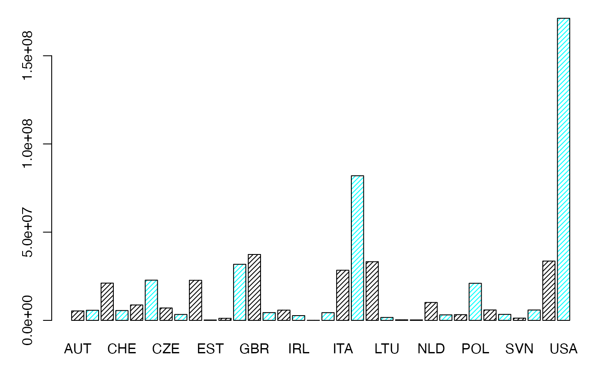
margY <- margin.table(Secteur,2)
par(mar = c(3, 3, 1, 1) + 0.1, mgp = c(2, 1, 0))
mp <- barplot(margY, beside=FALSE, args.legend=list(x="topright"),col=c("black","cyan","black","cyan"),density=25) # default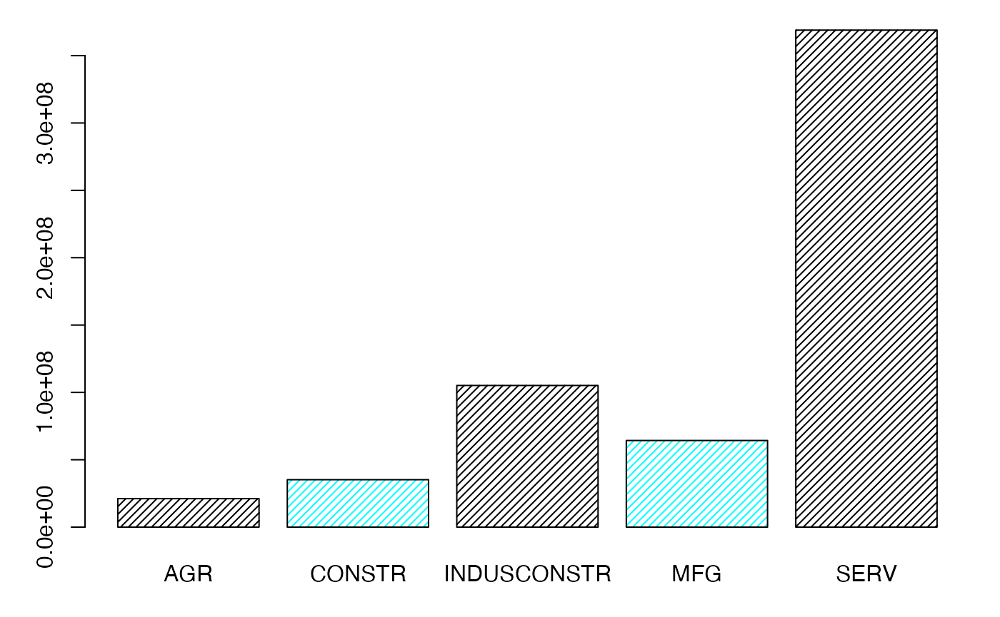
layout((1:2))
margX <- margin.table(Secteur,1)
par(mar = c(3, 3, 1, 1) + 0.1, mgp = c(2, 1, 0))
mp <- barplot(margX, beside=FALSE, args.legend=list(x="topright"),col=c("black","cyan","black","cyan"),density=25,las=2) # default
margY <- margin.table(Secteur,2)
par(mar = c(3, 3, 1, 1) + 0.1, mgp = c(2, 1, 0))
mp <- barplot(margY, beside=FALSE, args.legend=list(x="topright"),col=c("black","cyan","black","cyan"),density=25) # default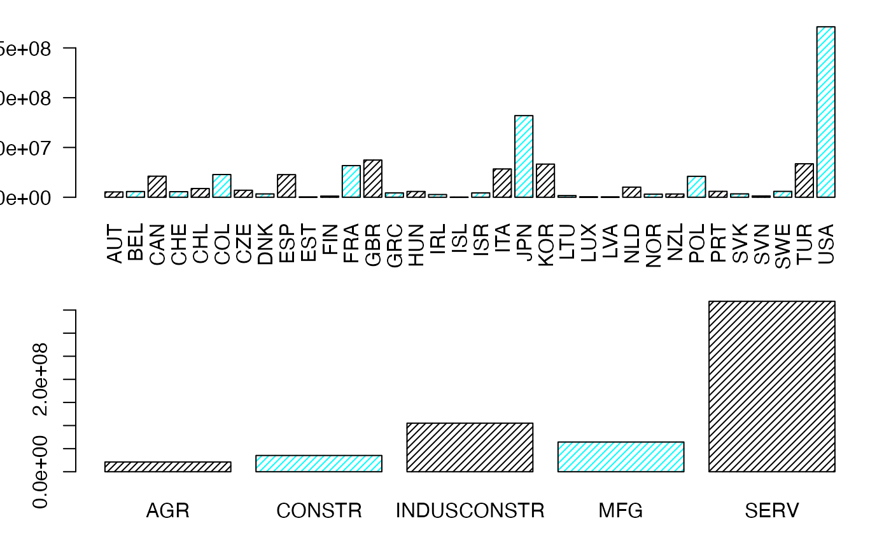
layout(1)
freqcondY <- prop.table(Secteur,2) #Y|X
par(mar = c(3, 3, 1, 1) + 0.1, mgp = c(2, 1, 0))
mp <- barplot(freqcondY, beside=TRUE, legend = rownames(Secteur), ylim = c(0, .5), args.legend=list(x="top", ncol=7)) # default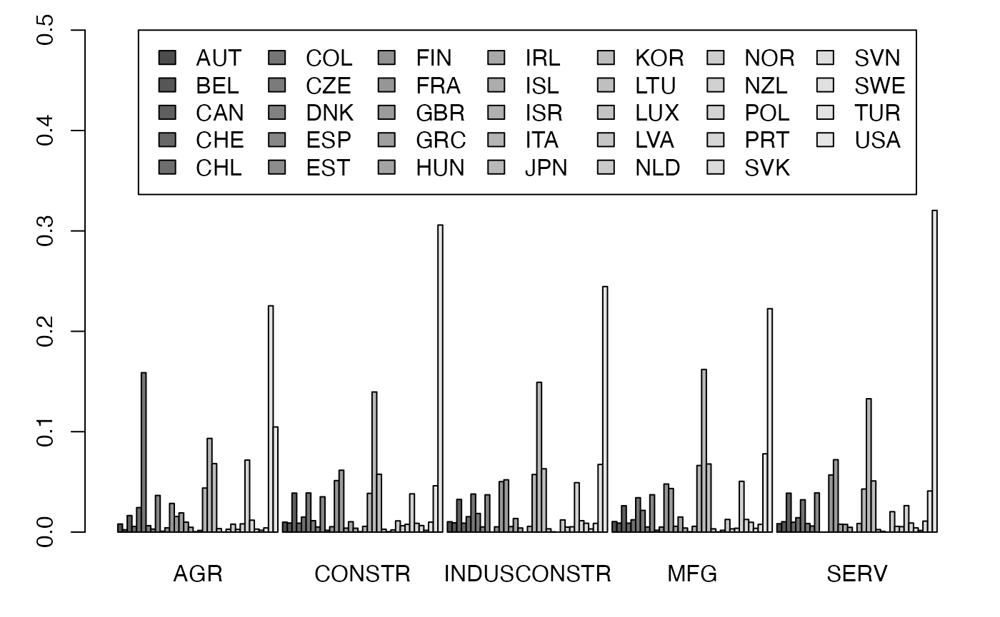
freqcondX <- prop.table(Secteur,1) #Y|X
par(mar = c(3, 3, 1, 1) + 0.1, mgp = c(2, 1, 0))
mp <- barplot(t(freqcondX), beside=TRUE, legend = colnames(Secteur), ylim = c(0, 1.05), args.legend=list(x="top", ncol=3),las=2) # default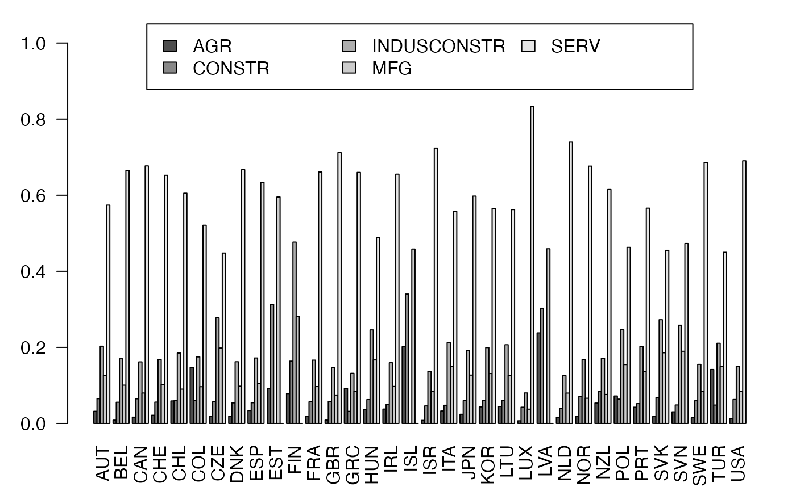
layout(1)
freqcondY <- prop.table(Secteur,2) #Y|X
par(mar = c(3, 3, 1, 1) + 0.1, mgp = c(2, 1, 0))
mp <- barplot(freqcondY, beside=FALSE, legend = rownames(Secteur), ylim = c(0, 1.6), args.legend=list(x="top", ncol=7),yaxt="n") # default
axis(2, at=0:5*.2)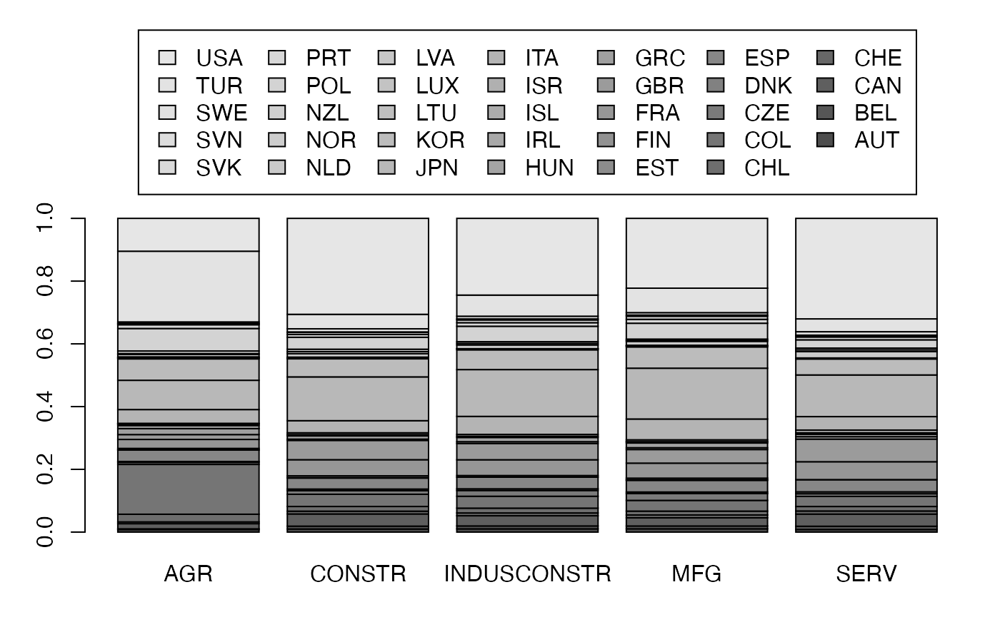
freqcondX <- prop.table(Secteur,1) #Y|X
par(mar = c(3, 3, 1, 1) + 0.1, mgp = c(2, 1, 0))
mp <- barplot(t(freqcondX), beside=FALSE, legend = colnames(Secteur), ylim = c(0, 1.3), args.legend=list(x="top", ncol=3),yaxt="n",las=2) # default
axis(2, at=0:5*.2)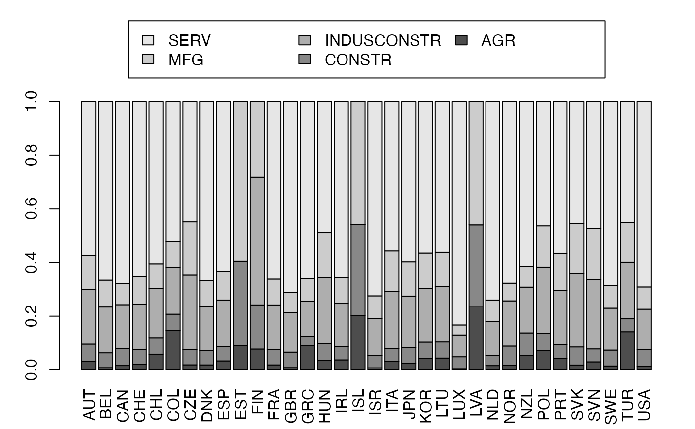
Salariés*Non-salariés (Quanti-Quanti)
data(Europe)
table(cut(Europe$Salariés,c(35,40,45,50)))
#>
#> (35,40] (40,45] (45,50]
#> 11 23 1
table(cut(Europe$NonSalariés,c(35,40,45,50,55)))
#>
#> (35,40] (40,45] (45,50] (50,55]
#> 1 8 21 5Distribution conditionnelle
ff=table(cut(Europe$Salariés,c(35,40,45,50)),
cut(Europe$NonSalariés,c(35,40,45,50,55)))/sum(table(cut(Europe$Salariés,c(35,40,45,50)),cut(Europe$NonSalariés,c(35,40,45,50,55))))
if(!("lattice" %in% installed.packages())){install.packages("lattice")}
library(lattice)
freqcondX <- prop.table(ff,1) #Y|X
freqcondY <- prop.table(ff,2) #Y|X
ensemble.df <- make.groups(freqcondX)
colnames(ensemble.df) <- c("Taux","ClasseX")
ensemble.df$ClasseX <- rep(colnames(ff),rep(3,length(colnames(ff))))
ensemble.df$ClasseY <- rep(rownames(ff),length(colnames(ff)))
ensemble.df
#> Taux ClasseX ClasseY
#> freqcondX1 0.00000000 (35,40] (35,40]
#> freqcondX2 0.04347826 (35,40] (40,45]
#> freqcondX3 0.00000000 (35,40] (45,50]
#> freqcondX4 0.18181818 (40,45] (35,40]
#> freqcondX5 0.26086957 (40,45] (40,45]
#> freqcondX6 0.00000000 (40,45] (45,50]
#> freqcondX7 0.63636364 (45,50] (35,40]
#> freqcondX8 0.56521739 (45,50] (40,45]
#> freqcondX9 1.00000000 (45,50] (45,50]
#> freqcondX10 0.18181818 (50,55] (35,40]
#> freqcondX11 0.13043478 (50,55] (40,45]
#> freqcondX12 0.00000000 (50,55] (45,50]freqmargtempspartiel.pdf
Salariés<-Europe$Partiel_H
NonSalariés<-Europe$Partiel_F
Ensemble.df <- make.groups(Salariés,NonSalariés)
colnames(Ensemble.df) <- c("Taux","Genre")Séparément
par(mar = c(3, 3, 1, 1) + 0.1, mgp = c(2, 1, 0))
histogram(Salariés,xlab="Temps partiels (% emploi total)",breaks=c(0,10,20,30,40,50,60,70,80))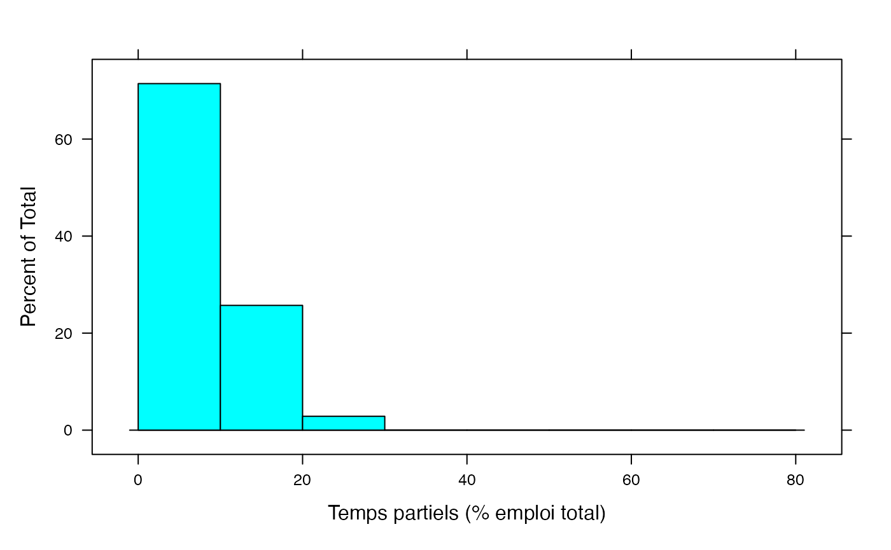
par(mar = c(3, 3, 1, 1) + 0.1, mgp = c(2, 1, 0))
histogram(NonSalariés,xlab="Temps partiels (% emploi total)",breaks=c(0,10,20,30,40,50,60,70,80))
tfreqmargtempspartiel.pdf
par(mar = c(3, 3, 1, 1) + 0.1, mgp = c(2, 1, 0))
histogram(~Taux|Genre,xlab="Temps partiels (% emploi total)",data=Ensemble.df,breaks=c(0,10,20,30,40,50,60,70,80))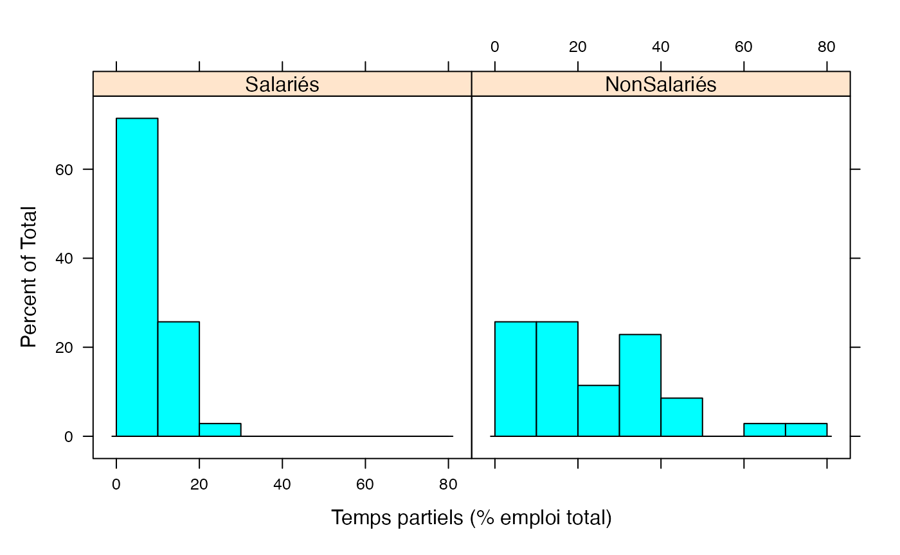
freqcondX.pdf
#mp <- barplot(t(freqcondX),legend = rownames(freqcondX), ylim = c(0, 1)) # default
par(mar = c(3, 3, 1, 1) + 0.1, mgp = c(2, 1, 0))
mp <- barplot(t(freqcondX), beside=TRUE, legend = colnames(freqcondX), ylim = c(0, 1), args.legend=list(x="topleft",ncol=2,title="Non-salariés"),ylab="Pourcentage du total",xlab="Salariés") # default
#text(mp, t(freqcondX)+.05, format(freqcondX,digits=2), xpd = TRUE, col = "blue")
mtext(0:4*20,at=c(1+2*0:4),side=1)
mtext(0:4*20,at=c(10+2*0:4),side=1)
mtext(0:4*20,at=c(19+2*0:4),side=1)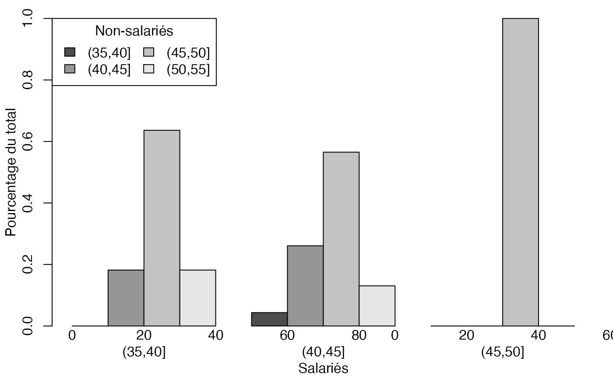
freqcondY.pdf
#mp <- barplot(t(freqcondX),legend = rownames(freqcondX), ylim = c(0, 1)) # default
par(mar = c(3, 3, 1, 1) + 0.1, mgp = c(2, 1, 0))
mp <- barplot(freqcondY, beside=TRUE, legend = rownames(freqcondY), ylim = c(0, 1), args.legend=list(x="top",ncol=3,title="Salariés"),ylab="Pourcentage du total",xlab="Non-salariés") # default
#text(mp, t(freqcondX)+.05, format(freqcondX,digits=2), xpd = TRUE, col = "blue")
mtext(0:1*20,at=c(1+2*0:1),side=1)
mtext(0:1*20,at=c(5+2*0:1),side=1)
mtext(0:1*20,at=c(9+2*0:1),side=1)
mtext(0:1*20,at=c(13+2*0:1),side=1)
mtext(0:1*20,at=c(17+2*0:1),side=1)
mtext(0:1*20,at=c(21+2*0:1),side=1)
mtext(0:1*20,at=c(25+2*0:1),side=1)
mtext(0:1*20,at=c(29+2*0:1),side=1)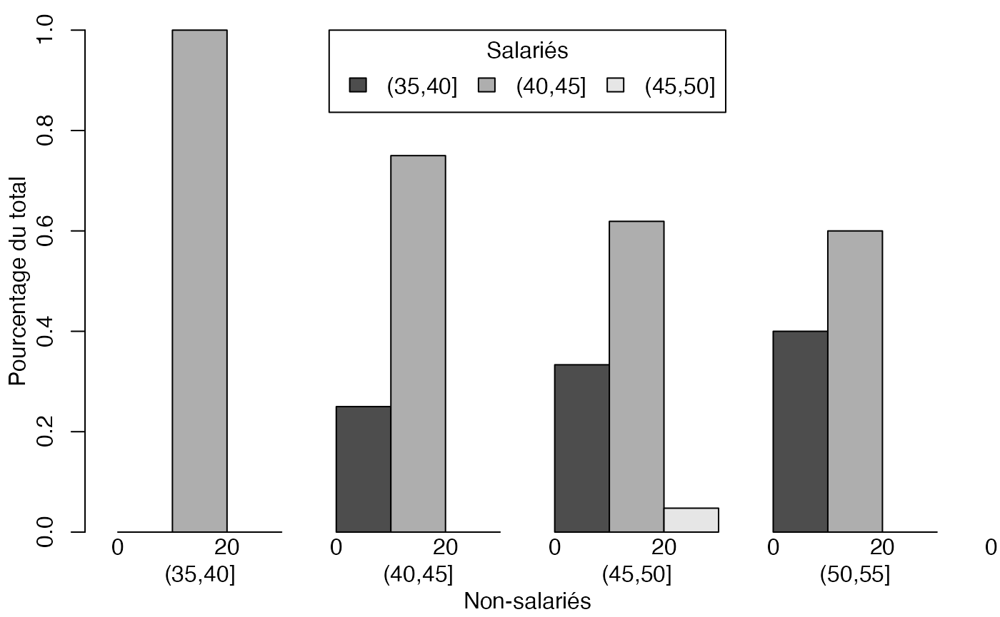
disptempspartiel.pdf
par(mar = c(3, 3, 1, 1) + 0.1, mgp = c(2, 1, 0))
plot(Europe$Salariés,Europe$NonSalariés,xlab="Salariés",ylab="Non-salariés",pch=19)
colmodel="cmyk"stereotempspartiel.pdf
ff=table(cut(Europe$Partiel_H,c(0,10,20,30)),cut(Europe$Partiel_F,c(0,10,20,30,40,50,60,70,80)))/sum(table(cut(Europe$Partiel_H,c(0,10,20,30)),cut(Europe$Partiel_F,c(0,10,20,30,40,50,60,70,80))))
plotcdf3(c(0,10,20,30),c(0,10,20,30,40,50,60,70,80),f=ff,xaxe="Salariés",yaxe="Non-salariés",theme="0")
plotcdf3(c(0,10,20,30),c(0,10,20,30,40,50,60,70,80),f=ff,xaxe="Salariés",yaxe="Non-salariés",theme="1")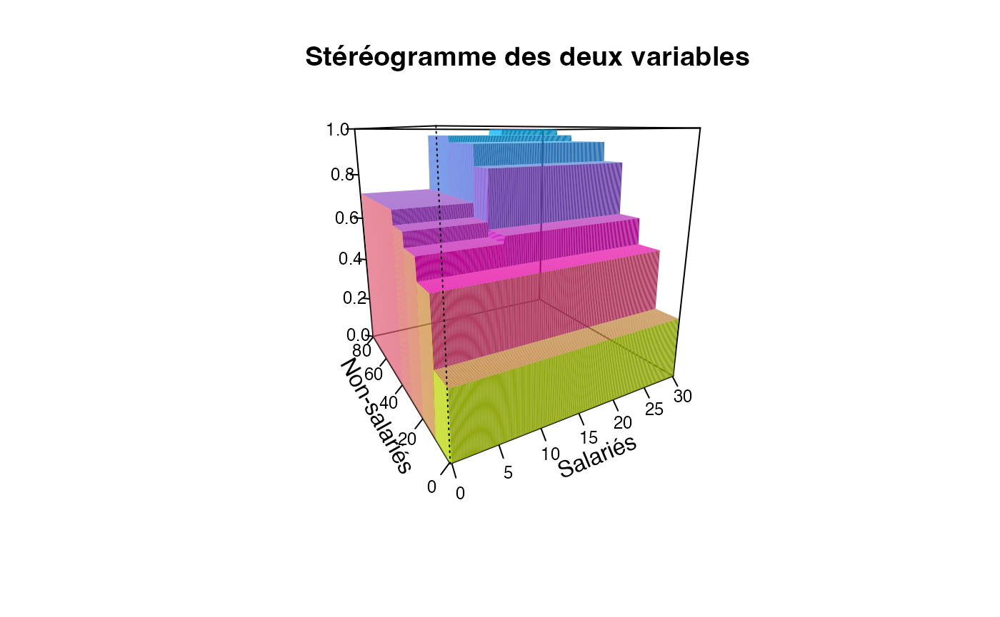
plotcdf3(c(0,10,20,30),c(0,10,20,30,40,50,60,70,80),f=ff,xaxe="Salariés",yaxe="Non-salariés",theme="2")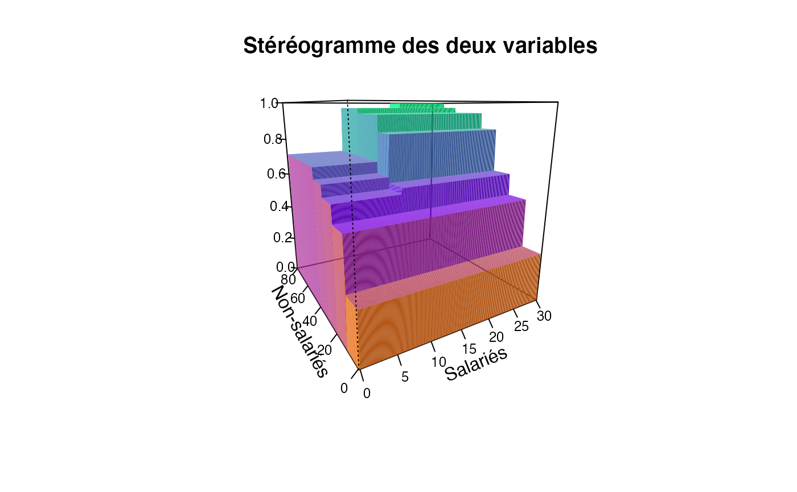
plotcdf3(c(0,10,20,30),c(0,10,20,30,40,50,60,70,80),f=ff,xaxe="Salariés",yaxe="Non-salariés",theme="cyan")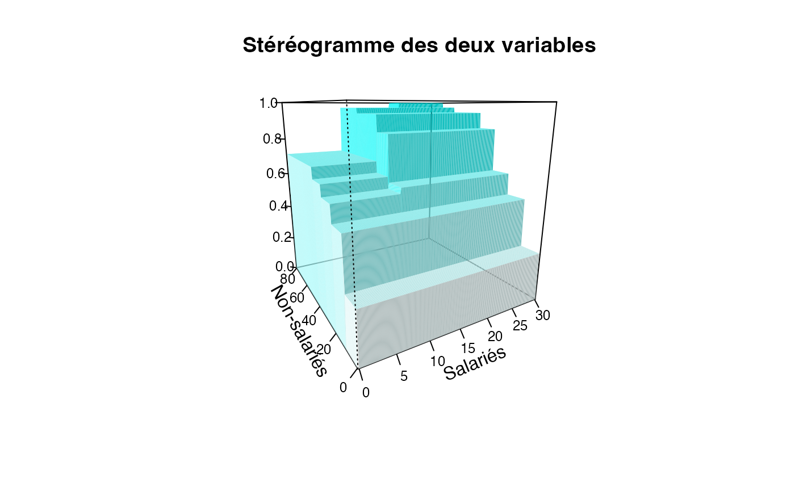
plotcdf3(c(0,10,20,30),c(0,10,20,30,40,50,60,70,80),f=ff,xaxe="Salariés",yaxe="Non-salariés",theme="cyan",border=TRUE)
plotcdf3(c(0,10,20,30),c(0,10,20,30,40,50,60,70,80),f=ff,xaxe="Salariés",yaxe="Non-salariés",theme="bw")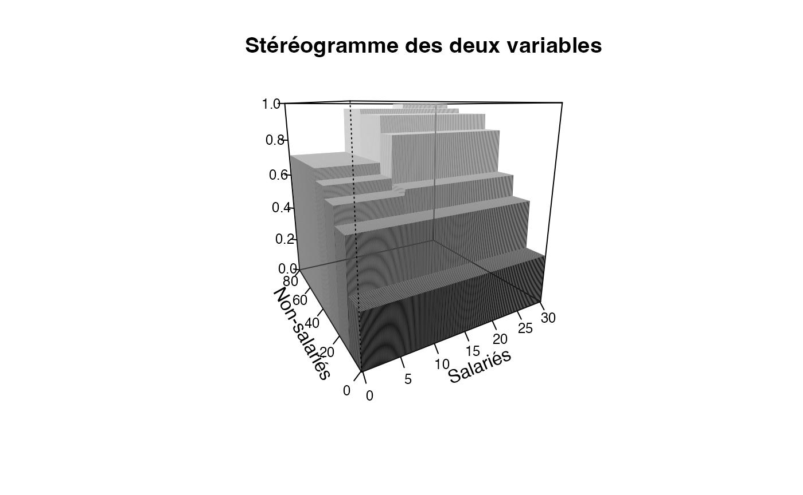
Temps partiel Hommes*Femmes (Quanti-Quanti)
data(Europe)
table(cut(Europe$Partiel_Ens,c(0,10,20,30,40,50,60,70,80)))
#>
#> (0,10] (10,20] (20,30] (30,40] (40,50] (50,60] (60,70] (70,80]
#> 16 9 8 1 0 1 0 0
table(cut(Europe$Partiel_H,c(0,10,20,30,40,50,60,70,80)))
#>
#> (0,10] (10,20] (20,30] (30,40] (40,50] (50,60] (60,70] (70,80]
#> 25 9 1 0 0 0 0 0
table(cut(Europe$Partiel_F,c(0,10,20,30,40,50,60,70,80)))
#>
#> (0,10] (10,20] (20,30] (30,40] (40,50] (50,60] (60,70] (70,80]
#> 9 9 4 8 3 0 1 1Distribution conditionnelle
ff=table(cut(Europe$Partiel_H,c(0,10,20,30)),cut(Europe$Partiel_F,c(0,10,20,30,40,50,60,70,80)))/sum(table(cut(Europe$Partiel_H,c(0,10,20,30)),cut(Europe$Partiel_F,c(0,10,20,30,40,50,60,70,80))))
freqcondX <- prop.table(ff,1) #Y|X
freqcondY <- prop.table(ff,2) #Y|X
ensemble.df <- make.groups(freqcondX)
colnames(ensemble.df) <- c("Taux","ClasseX")
ensemble.df$ClasseX <- rep(colnames(ff),rep(3,length(colnames(ff))))
ensemble.df$ClasseY <- rep(rownames(ff),length(colnames(ff)))
ensemble.df
#> Taux ClasseX ClasseY
#> freqcondX1 0.3600000 (0,10] (0,10]
#> freqcondX2 0.0000000 (0,10] (10,20]
#> freqcondX3 0.0000000 (0,10] (20,30]
#> freqcondX4 0.3600000 (10,20] (0,10]
#> freqcondX5 0.0000000 (10,20] (10,20]
#> freqcondX6 0.0000000 (10,20] (20,30]
#> freqcondX7 0.1200000 (20,30] (0,10]
#> freqcondX8 0.1111111 (20,30] (10,20]
#> freqcondX9 0.0000000 (20,30] (20,30]
#> freqcondX10 0.0800000 (30,40] (0,10]
#> freqcondX11 0.6666667 (30,40] (10,20]
#> freqcondX12 0.0000000 (30,40] (20,30]
#> freqcondX13 0.0800000 (40,50] (0,10]
#> freqcondX14 0.1111111 (40,50] (10,20]
#> freqcondX15 0.0000000 (40,50] (20,30]
#> freqcondX16 0.0000000 (50,60] (0,10]
#> freqcondX17 0.0000000 (50,60] (10,20]
#> freqcondX18 0.0000000 (50,60] (20,30]
#> freqcondX19 0.0000000 (60,70] (0,10]
#> freqcondX20 0.1111111 (60,70] (10,20]
#> freqcondX21 0.0000000 (60,70] (20,30]
#> freqcondX22 0.0000000 (70,80] (0,10]
#> freqcondX23 0.0000000 (70,80] (10,20]
#> freqcondX24 1.0000000 (70,80] (20,30]freqmargtempspartiel.pdf
Hommes<-Europe$Partiel_H
Femmes<-Europe$Partiel_F
Ensemble.df <- make.groups(Hommes,Femmes)
colnames(Ensemble.df) <- c("Taux","Genre")
freqcondX.pdf
#mp <- barplot(t(freqcondX),legend = rownames(freqcondX), ylim = c(0, 1)) # default
par(mar = c(3, 3, 1, 1) + 0.1, mgp = c(2, 1, 0))
mp <- barplot(t(freqcondX), beside=TRUE, legend = colnames(freqcondX), ylim = c(0, 1), args.legend=list(x="topleft",ncol=2,title="Femmes"),ylab="Pourcentage du total",xlab="Hommes") # default
#text(mp, t(freqcondX)+.05, format(freqcondX,digits=2), xpd = TRUE, col = "blue")
mtext(0:4*20,at=c(1+2*0:4),side=1)
mtext(0:4*20,at=c(10+2*0:4),side=1)
mtext(0:4*20,at=c(19+2*0:4),side=1)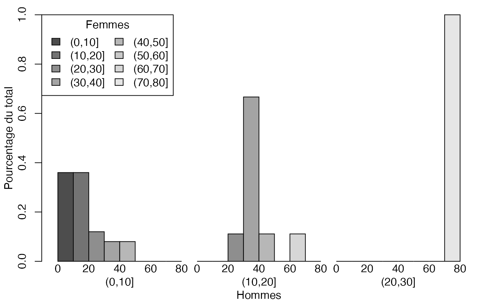
freqcondY.pdf
#mp <- barplot(t(freqcondX),legend = rownames(freqcondX), ylim = c(0, 1)) # default
par(mar = c(3, 3, 1, 1) + 0.1, mgp = c(2, 1, 0))
mp <- barplot(freqcondY, beside=TRUE, legend = rownames(freqcondY), ylim = c(0, 1), args.legend=list(x="top",ncol=3,title="Hommes"),ylab="Pourcentage du total",xlab="Femmes") # default
#text(mp, t(freqcondX)+.05, format(freqcondX,digits=2), xpd = TRUE, col = "blue")
mtext(0:1*20,at=c(1+2*0:1),side=1)
mtext(0:1*20,at=c(5+2*0:1),side=1)
mtext(0:1*20,at=c(9+2*0:1),side=1)
mtext(0:1*20,at=c(13+2*0:1),side=1)
mtext(0:1*20,at=c(17+2*0:1),side=1)
mtext(0:1*20,at=c(21+2*0:1),side=1)
mtext(0:1*20,at=c(25+2*0:1),side=1)
mtext(0:1*20,at=c(29+2*0:1),side=1)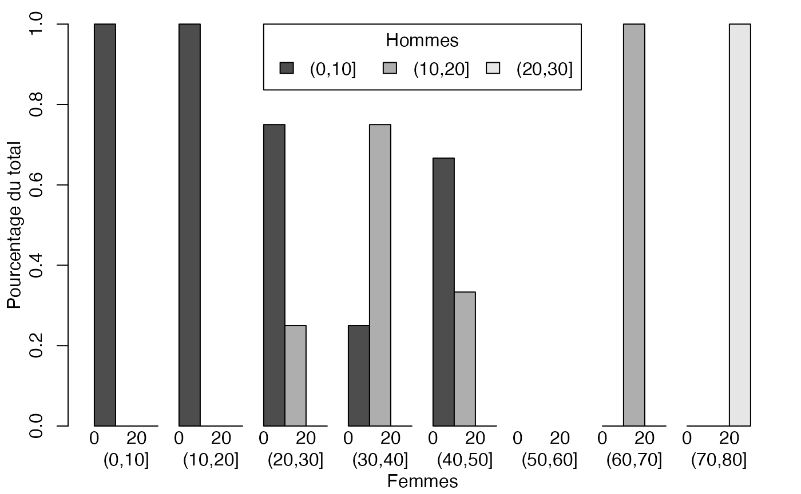
disptempspartiel.pdf
par(mar = c(3, 3, 1, 1) + 0.1, mgp = c(2, 1, 0))
plot(Europe$Partiel_H,Europe$Partiel_F,xlab="Hommes",ylab="Femmes",pch=19)
colmodel="cmyk"
ff=table(cut(Europe$Partiel_H,c(0,10,20,30)),cut(Europe$Partiel_F,c(0,10,20,30,40,50,60,70,80)))/sum(table(cut(Europe$Partiel_H,c(0,10,20,30)),cut(Europe$Partiel_F,c(0,10,20,30,40,50,60,70,80))))
plotcdf3(c(0,10,20,30),c(0,10,20,30,40,50,60,70,80),f=ff,xaxe="Hommes",yaxe="Femmes",theme="0")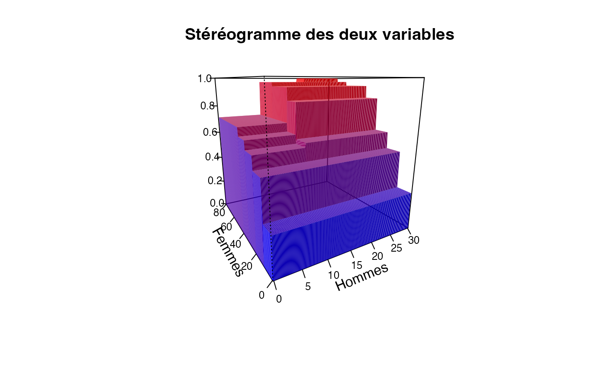
Provinces et territoires vs Sexe Canada (Quali-Quali)
data(ProtervsSexe_Canada)Distribution conditionnelle
ff=as.table(as.matrix(ProtervsSexe_Canada))/sum(as.table(as.matrix(ProtervsSexe_Canada)))
freqcondX <- prop.table(ff,1) #Y|X
freqcondY <- prop.table(ff,2) #Y|X
ensemble.df <- make.groups(freqcondX)
colnames(ensemble.df) <- c("Taux","ClasseX")
ensemble.df$ClasseX <- rep(colnames(ff),rep(length(rownames(ff)),length(colnames(ff))))
ensemble.df$ClasseY <- rep(rownames(ff),length(colnames(ff)))
ensemble.df
#> Taux ClasseX ClasseY
#> freqcondX1 0.4940692 Hommes Terre-Neuve-et-Labrador
#> freqcondX2 0.4918277 Hommes Île-du-Prince-Édouard
#> freqcondX3 0.4894997 Hommes Nouvelle-Écosse
#> freqcondX4 0.4950210 Hommes Nouveau-Brunswick
#> freqcondX5 0.4999521 Hommes Québec
#> freqcondX6 0.4940574 Hommes Ontario
#> freqcondX7 0.4992695 Hommes Manitoba
#> freqcondX8 0.5036927 Hommes Saskatchewan
#> freqcondX9 0.5028255 Hommes Alberta
#> freqcondX10 0.4945358 Hommes Colombie-Britannique
#> freqcondX11 0.5085846 Hommes Yukon
#> freqcondX12 0.5144040 Hommes Territoires du Nord-Ouest
#> freqcondX13 0.5118034 Hommes Nunavut
#> freqcondX14 0.5059308 Femmes Terre-Neuve-et-Labrador
#> freqcondX15 0.5081723 Femmes Île-du-Prince-Édouard
#> freqcondX16 0.5105003 Femmes Nouvelle-Écosse
#> freqcondX17 0.5049790 Femmes Nouveau-Brunswick
#> freqcondX18 0.5000479 Femmes Québec
#> freqcondX19 0.5059426 Femmes Ontario
#> freqcondX20 0.5007305 Femmes Manitoba
#> freqcondX21 0.4963073 Femmes Saskatchewan
#> freqcondX22 0.4971745 Femmes Alberta
#> freqcondX23 0.5054642 Femmes Colombie-Britannique
#> freqcondX24 0.4914154 Femmes Yukon
#> freqcondX25 0.4855960 Femmes Territoires du Nord-Ouest
#> freqcondX26 0.4881966 Femmes Nunavutfreqmargtempspartiel.pdf
Hommes<-ProtervsSexe_Canada$Hommes
Femmes<-ProtervsSexe_Canada$Femmes
Ensemble.df <- make.groups(Hommes,Femmes)
colnames(Ensemble.df) <- c("Taux","Genre")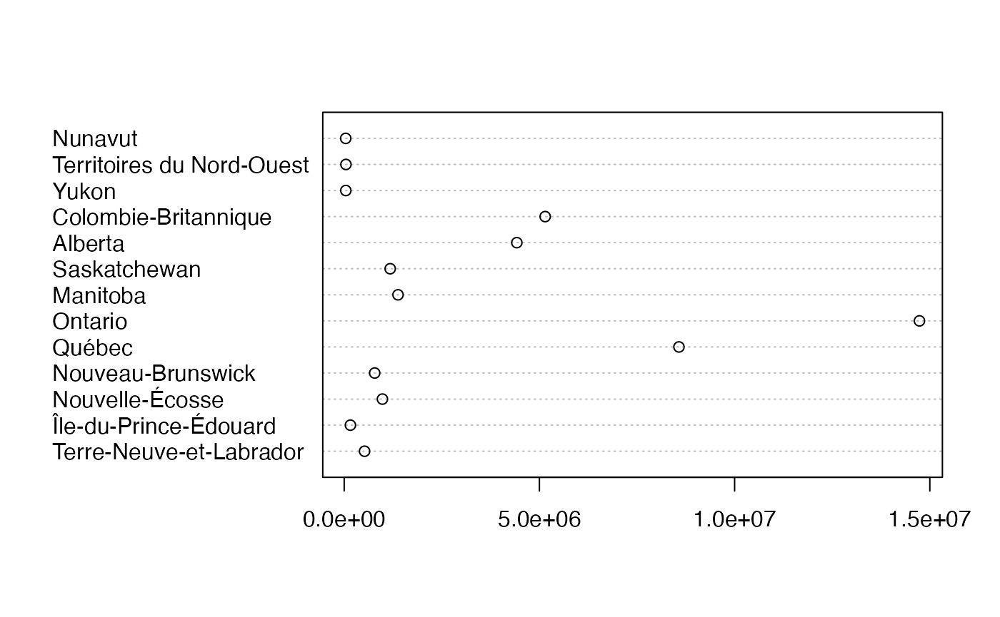
freqcondX.pdf
par(mar = c(7.5, 3, 1, 1) + 0.1, mgp = c(2, 1, 0))
mp <- barplot(t(freqcondX), beside=TRUE, legend = colnames(freqcondX), ylim = c(0, .65), las=2, srt=60, xaxt="n", args.legend=list(x="topleft",ncol=2),ylab="Pourcentage du total")
text(colMeans(mp), par("usr")[3], labels = rownames(freqcondX), srt = 60, adj = c(1.1,1.1), xpd = TRUE, cex=.8)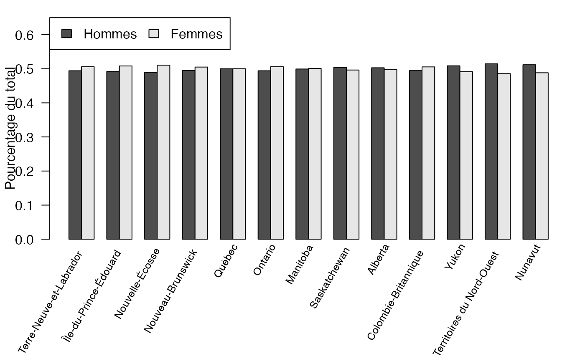
# defaultfreqcondY.pdf
par(mar = c(3, 3, 1, 1) + 0.1, mgp = c(2, 1, 0))
mp <- barplot(freqcondX, beside=TRUE, legend = rownames(freqcondX), ylim = c(0, .85), las=2, srt=60, xaxt="n", args.legend=list(x="topleft",ncol=3,cex=.9),ylab="Pourcentage du total")
text(colMeans(mp), par("usr")[3], labels = colnames(freqcondX), srt = 60, adj = c(1.1,1.1), xpd = TRUE, cex=.8)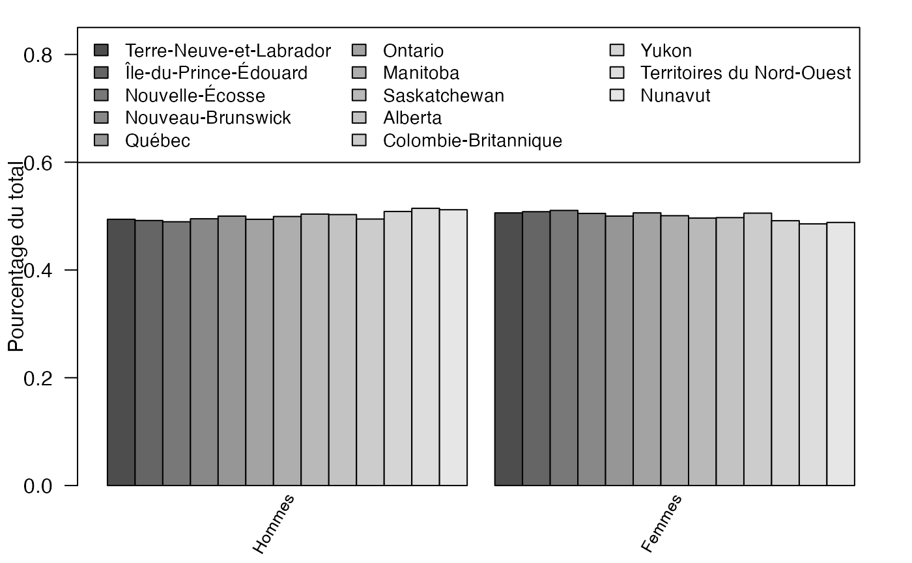
# default
if(!("vcd" %in% installed.packages())){install.packages("vcd")}
library(vcd)
#> Le chargement a nécessité le package : grid
mosaic(t(as.table(as.matrix(ProtervsSexe_Canada))), legend=TRUE,
direction = "v", labeling= labeling_border(rot_labels = c(0,0,0,0),
just_labels = c("center", "center", "center", "center"), varnames = FALSE,offset_labels=c(0,0,0,4),gp_labels = gpar(fontsize = 6)))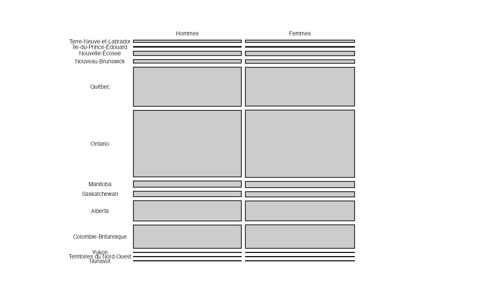
Classe age vs Homme-Femme Canada (Quali-Quanti)
data(AgevsSexe_Canada_full)
AgevsSexe_Canada <- AgevsSexe_Canada_full[-nrow(AgevsSexe_Canada_full),]
AgevsSexe_Canada
#> Hommes Femmes
#> 0 à 4 ans 985452 936492
#> 5 à 9 ans 1045953 998650
#> 10 à 14 ans 1055313 1016787
#> 15 à 19 ans 1074091 1026774
#> 20 à 24 ans 1295347 1187455
#> 25 à 29 ans 1365844 1279396
#> 30 à 34 ans 1350274 1311449
#> 35 à 39 ans 1317432 1313248
#> 40 à 44 ans 1220034 1244213
#> 45 à 49 ans 1185148 1204968
#> 50 à 54 ans 1217865 1232050
#> 55 à 59 ans 1364677 1380219
#> 60 à 64 ans 1260206 1300035
#> 65 à 69 ans 1050581 1116694
#> 70 à 74 ans 854293 932329
#> 75 à 79 ans 569696 648607
#> 80 à 84 ans 359314 452056
#> 85 à 89 ans 208810 308900
#> 90 à 94 ans 84178 164415
#> 95 à 99 ans 18597 55879Distribution conditionnelle
donnees = data.frame(
Taux=c(AgevsSexe_Canada$Hommes,AgevsSexe_Canada$Femmes),
Type=factor(c(rep("Hommes",nrow(AgevsSexe_Canada)),rep("Femmes",nrow(AgevsSexe_Canada)))))
tapply(donnees$Taux,donnees$Type,mean)
#> Femmes Hommes
#> 955530.8 944155.2
par(mar = c(2, 2, 1, 1) + 0.1, mgp = c(2, 1, 0))
pie(colSums(AgevsSexe_Canada),labels=levels(donnees$Type),col=c("white","#00FFFF","black","#00FFFF"),border=c("black","#00FFFF","black","#00FFFF"),density=25,cex=1.2)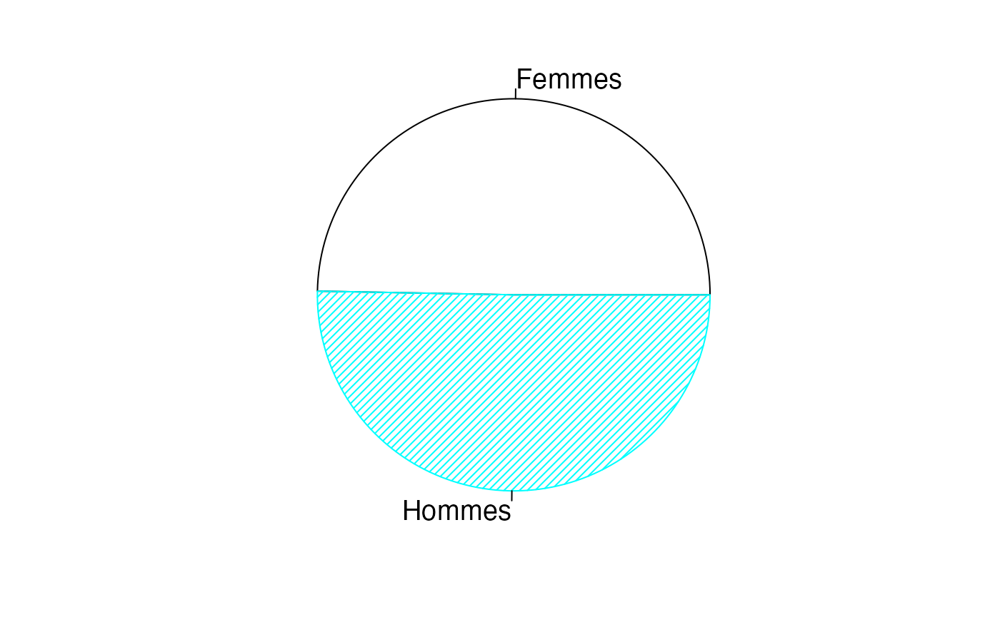
par(mar = c(2, 2, 1, 1) + 0.1, mgp = c(2, 1, 0))
dotplot(colSums(AgevsSexe_Canada),labels=levels(donnees$Type),col=c("black","black","black","black"),border=c("black","black","black","black"),density=25,cex=1.2, xlab = "Effectifs")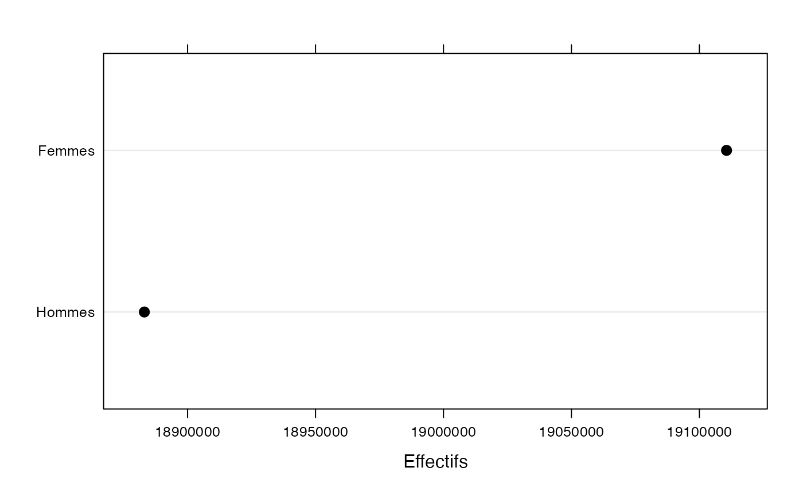
sumdat<-data.frame(Âge=rep((0:19)*5+2.5,rowSums(AgevsSexe_Canada)))
histogram(~Âge,data=sumdat,breaks=(0:20)*5)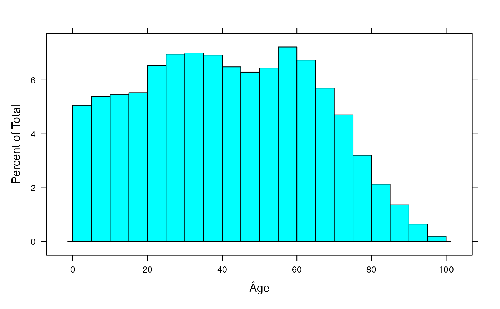
fulldat<-data.frame(Âge=c(rep((0:19)*5+2.5,AgevsSexe_Canada[,1]),
rep((0:19)*5+2.5,AgevsSexe_Canada[,2])
),
Type=factor(c(rep("Homme",sum(AgevsSexe_Canada[,1])),rep("Femme",sum(AgevsSexe_Canada[,2]))))
)
#summary(fulldat)
histogram(~Âge|Type,data=fulldat,breaks=(0:20)*5)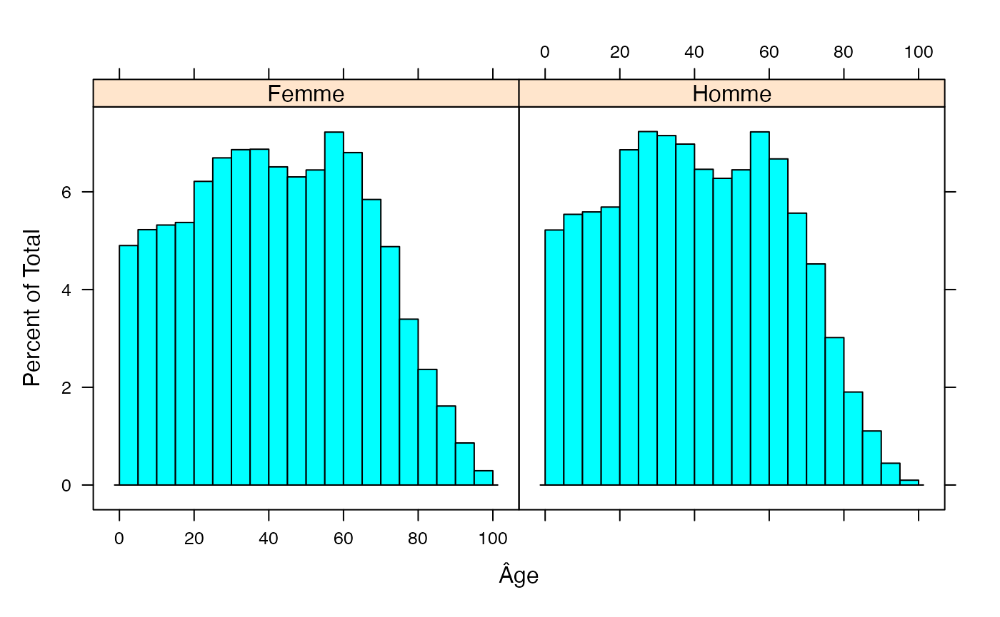
TauxQuali <- cut(fulldat$Âge,breaks=(0:20)*5)
#split(fulldat$Type,TauxQuali)
sapply(split(fulldat$Type,TauxQuali),table)
#> (0,5] (5,10] (10,15] (15,20] (20,25] (25,30] (30,35] (35,40] (40,45]
#> Femme 936492 998650 1016787 1026774 1187455 1279396 1311449 1313248 1244213
#> Homme 985452 1045953 1055313 1074091 1295347 1365844 1350274 1317432 1220034
#> (45,50] (50,55] (55,60] (60,65] (65,70] (70,75] (75,80] (80,85] (85,90]
#> Femme 1204968 1232050 1380219 1300035 1116694 932329 648607 452056 308900
#> Homme 1185148 1217865 1364677 1260206 1050581 854293 569696 359314 208810
#> (90,95] (95,100]
#> Femme 164415 55879
#> Homme 84178 18597
regroup <- sapply(split(fulldat$Type,TauxQuali),table)
par(mar = c(3, 3, 1, 1) + 0.1, mgp = c(2, 1, 0))
barplot(regroup,beside=TRUE, legend=levels(donnees$Type), args.legend=list(x="topright", ncol=1),las=2)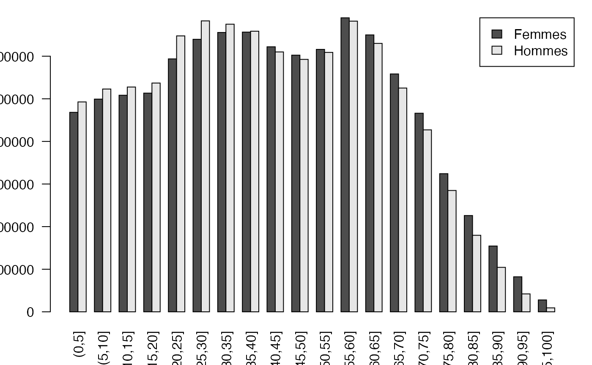
Classe age vs Provinces et territoires Canada (Quali-Quanti)
data(AgevsProter_Canada_full)
AgevsProter_Canada <- AgevsProter_Canada_full[-nrow(AgevsProter_Canada_full),]
AgevsProter_Canada
#> Terre.Neuve.et.Labrador Île.du.Prince.Édouard Nouvelle.Écosse
#> 0 à 4 ans 20402 7199 42443
#> 5 à 9 ans 23376 8248 46177
#> 10 à 14 ans 26186 8966 48170
#> 15 à 19 ans 26994 9340 50776
#> 20 à 24 ans 28910 11577 61556
#> 25 à 29 ans 28076 10321 63359
#> 30 à 34 ans 28942 9212 61264
#> 35 à 39 ans 30151 9314 58683
#> 40 à 44 ans 31426 9586 56907
#> 45 à 49 ans 35754 10231 61194
#> 50 à 54 ans 40214 10319 65276
#> 55 à 59 ans 43105 12005 78780
#> 60 à 64 ans 42339 11350 75941
#> 65 à 69 ans 39718 10116 66676
#> 70 à 74 ans 33179 9106 57399
#> 75 à 79 ans 20458 5589 37734
#> 80 à 84 ans 12617 3641 24225
#> 85 à 89 ans 6662 2244 14184
#> 90 à 94 ans 2715 935 6318
#> 95 à 99 ans 751 281 1930
#> Nouveau.Brunswick Québec Ontario Manitoba Saskatchewan Alberta
#> 0 à 4 ans 33582 430250 723016 85220 75200 269163
#> 5 à 9 ans 38199 465890 762654 89507 78696 277785
#> 10 à 14 ans 40354 457420 792947 86583 76730 276328
#> 15 à 19 ans 40662 426496 852405 85808 71304 256742
#> 20 à 24 ans 43490 499370 1039661 96636 75402 277328
#> 25 à 29 ans 43981 564669 1077433 97157 77488 314507
#> 30 à 34 ans 44703 548066 1041952 98789 85751 356226
#> 35 à 39 ans 46655 578273 992844 95203 86664 359301
#> 40 à 44 ans 48179 581724 921378 86739 76067 319889
#> 45 à 49 ans 51551 527233 932058 82541 67397 288546
#> 50 à 54 ans 54044 546847 968546 80302 65716 266489
#> 55 à 59 ans 63300 637724 1073519 89949 77024 284259
#> 60 à 64 ans 61514 619126 961243 83163 74222 264339
#> 65 à 69 ans 55477 529279 803962 70981 62071 210073
#> 70 à 74 ans 46962 440008 673546 57001 46528 157657
#> 75 à 79 ans 30462 313752 461015 38329 31910 102977
#> 80 à 84 ans 19475 198497 319548 25922 22791 68565
#> 85 à 89 ans 11705 128147 204227 16952 15931 44033
#> 90 à 94 ans 5213 60879 98638 8968 8492 20921
#> 95 à 99 ans 1704 18086 29527 3010 2773 5746
#> Colombie.Britannique Yukon TerritoiresduNord.Ouest Nunavut
#> 0 à 4 ans 225897 2413 2963 4196
#> 5 à 9 ans 244206 2508 3081 4276
#> 10 à 14 ans 249173 2246 3010 3987
#> 15 à 19 ans 272195 2067 2793 3283
#> 20 à 24 ans 340325 2346 3028 3173
#> 25 à 29 ans 358457 2828 3688 3276
#> 30 à 34 ans 376466 3468 3705 3179
#> 35 à 39 ans 363871 3549 3405 2767
#> 40 à 44 ans 323620 3050 3348 2334
#> 45 à 49 ans 325674 2864 2919 2154
#> 50 à 54 ans 343894 2753 3238 2277
#> 55 à 59 ans 376848 3233 3389 1761
#> 60 à 64 ans 360150 3116 2619 1119
#> 65 à 69 ans 314021 2385 1818 698
#> 70 à 74 ans 262197 1532 1048 459
#> 75 à 79 ans 174377 862 603 235
#> 80 à 84 ans 115218 464 293 114
#> 85 à 89 ans 73205 246 133 41
#> 90 à 94 ans 35355 84 57 18
#> 95 à 99 ans 10613 31 21 3Distribution conditionnelle
donnees = data.frame(
Âge=c(AgevsProter_Canada$Terre.Neuve.et.Labrador,AgevsProter_Canada$Île.du.Prince.Édouard,AgevsProter_Canada$Nouvelle.Écosse,AgevsProter_Canada$Nouveau.Brunswick,AgevsProter_Canada$Québec,AgevsProter_Canada$Ontario,AgevsProter_Canada$Manitoba,AgevsProter_Canada$Saskatchewan,AgevsProter_Canada$Alberta,AgevsProter_Canada$Colombie.Britannique,AgevsProter_Canada$Yukon,AgevsProter_Canada$TerritoiresduNord.Ouest,AgevsProter_Canada$Nunavut),
Type=factor(
c(rep("Terre Neuve et Labrador",nrow(AgevsProter_Canada)),
rep("Île du Prince Édouard",nrow(AgevsProter_Canada)),
rep("Nouvelle Écosse",nrow(AgevsProter_Canada)),
rep("Nouveau Brunswick",nrow(AgevsProter_Canada)),
rep("Québec",nrow(AgevsProter_Canada)),
rep("Ontario",nrow(AgevsProter_Canada)),
rep("Manitoba",nrow(AgevsProter_Canada)),
rep("Saskatchewan",nrow(AgevsProter_Canada)),
rep("Alberta",nrow(AgevsProter_Canada)),
rep("Colombie Britannique",nrow(AgevsProter_Canada)),
rep("Yukon",nrow(AgevsProter_Canada)),
rep("Territoires du Nord Ouest",nrow(AgevsProter_Canada)),
rep("Nunavut",nrow(AgevsProter_Canada))
)))
tapply(donnees$Âge,donnees$Type,mean)
#> Alberta Colombie Britannique Île du Prince Édouard
#> 221043.70 257288.10 7979.00
#> Manitoba Nouveau Brunswick Nouvelle Écosse
#> 68938.00 39060.60 48949.60
#> Nunavut Ontario Québec
#> 1967.50 736505.95 428586.80
#> Saskatchewan Terre Neuve et Labrador Territoires du Nord Ouest
#> 58907.85 26098.75 2257.95
#> Yukon
#> 2102.25
nameXlit <- c("Terre Neuve et Labrador",
"Île du Prince Édouard",
"Nouvelle Écosse",
"Nouveau Brunswick",
"Québec",
"Ontario",
"Manitoba",
"\nSaskatchewan",
"Alberta",
"Colombie Britannique",
"\nYukon",
"\n\n\nTerritoires du Nord Ouest",
"Nunavut")
par(mar = c(2, 2, 1, 1) + 0.1, mgp = c(2, 1, 0))
pie(colSums(AgevsProter_Canada),labels=nameXlit,col=c("white","#00FFFF","black","#00FFFF"),border=c("black","#00FFFF","black","#00FFFF"),density=25,cex=.6)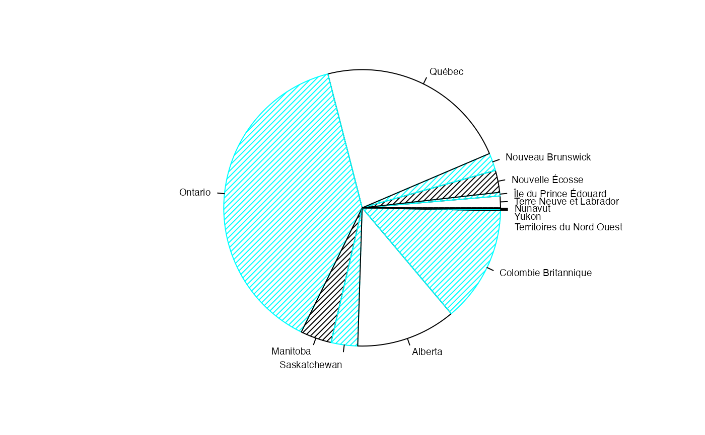
par(mar = c(2, 2, 1, 1) + 0.1, mgp = c(2, 1, 0))
dotplot(colSums(AgevsProter_Canada),labels=levels(donnees$Type),col=c("black","black","black","black"),border=c("black","black","black","black"),density=25,cex=1.2)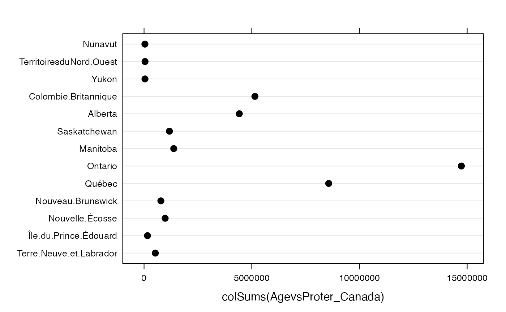
sumdat<-data.frame(Âge=rep((0:19)*5+2.5,rowSums(AgevsProter_Canada)))
histogram(~Âge,data=sumdat,breaks=(0:20)*5)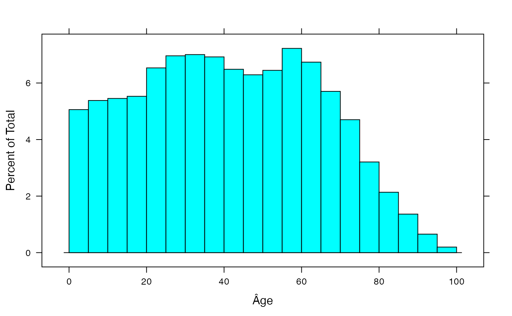
fulldat<-data.frame(Âge=c(rep((0:19)*5+2.5,AgevsProter_Canada[,1]),
rep((0:19)*5+2.5,AgevsProter_Canada[,2]),
rep((0:19)*5+2.5,AgevsProter_Canada[,3]),
rep((0:19)*5+2.5,AgevsProter_Canada[,4]),
rep((0:19)*5+2.5,AgevsProter_Canada[,5]),
rep((0:19)*5+2.5,AgevsProter_Canada[,6]),
rep((0:19)*5+2.5,AgevsProter_Canada[,7]),
rep((0:19)*5+2.5,AgevsProter_Canada[,8]),
rep((0:19)*5+2.5,AgevsProter_Canada[,9]),
rep((0:19)*5+2.5,AgevsProter_Canada[,10]),
rep((0:19)*5+2.5,AgevsProter_Canada[,11]),
rep((0:19)*5+2.5,AgevsProter_Canada[,12]),
rep((0:19)*5+2.5,AgevsProter_Canada[,13])
),
Type=factor(
c(rep("T. Neuve et Lab.",sum(AgevsProter_Canada[,1])),
rep("Île Pr Édouard",sum(AgevsProter_Canada[,2])),
rep("Nouv. Écosse",sum(AgevsProter_Canada[,3])),
rep("Nouv. Brunswick",sum(AgevsProter_Canada[,4])),
rep("Québec",sum(AgevsProter_Canada[,5])),
rep("Ontario",sum(AgevsProter_Canada[,6])),
rep("Manitoba",sum(AgevsProter_Canada[,7])),
rep("Saskatch.",sum(AgevsProter_Canada[,8])),
rep("Alberta",sum(AgevsProter_Canada[,9])),
rep("Col. Brit.",sum(AgevsProter_Canada[,10])),
rep("Yukon",sum(AgevsProter_Canada[,11])),
rep("T. du Nord Ouest",sum(AgevsProter_Canada[,12])),
rep("Nunavut",sum(AgevsProter_Canada[,13]))
))
)
#summary(fulldat)
histogram(~Âge|Type,data=fulldat,breaks=(0:20)*5)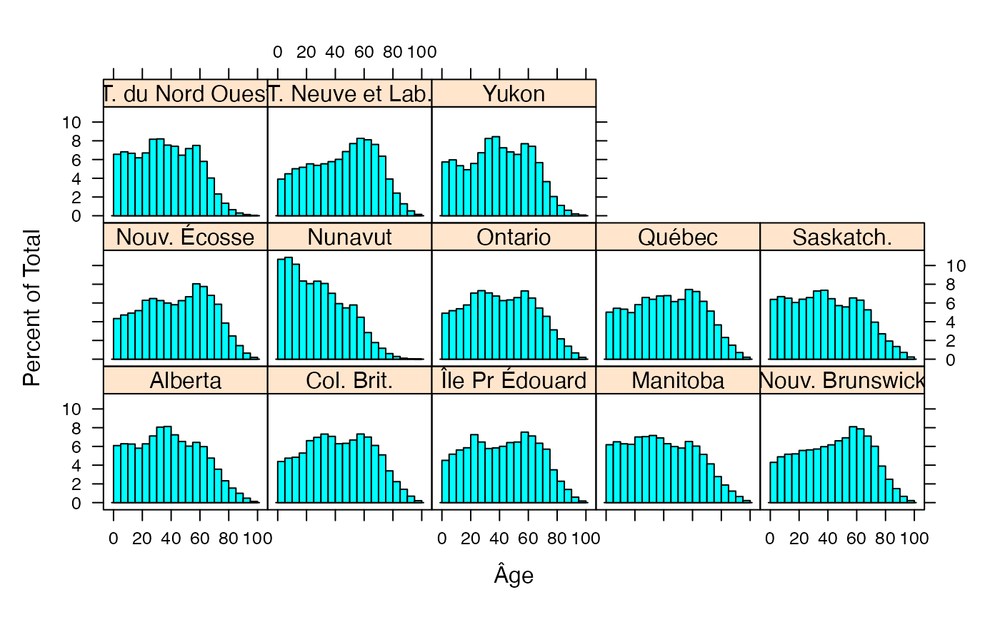
TauxQuali <- cut(fulldat$Âge,breaks=(0:20)*5)
#split(fulldat$Type,TauxQuali)
sapply(split(fulldat$Type,TauxQuali),table)
#> (0,5] (5,10] (10,15] (15,20] (20,25] (25,30] (30,35] (35,40]
#> Alberta 269163 277785 276328 256742 277328 314507 356226 359301
#> Col. Brit. 225897 244206 249173 272195 340325 358457 376466 363871
#> Île Pr Édouard 7199 8248 8966 9340 11577 10321 9212 9314
#> Manitoba 85220 89507 86583 85808 96636 97157 98789 95203
#> Nouv. Brunswick 33582 38199 40354 40662 43490 43981 44703 46655
#> Nouv. Écosse 42443 46177 48170 50776 61556 63359 61264 58683
#> Nunavut 4196 4276 3987 3283 3173 3276 3179 2767
#> Ontario 723016 762654 792947 852405 1039661 1077433 1041952 992844
#> Québec 430250 465890 457420 426496 499370 564669 548066 578273
#> Saskatch. 75200 78696 76730 71304 75402 77488 85751 86664
#> T. du Nord Ouest 2963 3081 3010 2793 3028 3688 3705 3405
#> T. Neuve et Lab. 20402 23376 26186 26994 28910 28076 28942 30151
#> Yukon 2413 2508 2246 2067 2346 2828 3468 3549
#> (40,45] (45,50] (50,55] (55,60] (60,65] (65,70] (70,75]
#> Alberta 319889 288546 266489 284259 264339 210073 157657
#> Col. Brit. 323620 325674 343894 376848 360150 314021 262197
#> Île Pr Édouard 9586 10231 10319 12005 11350 10116 9106
#> Manitoba 86739 82541 80302 89949 83163 70981 57001
#> Nouv. Brunswick 48179 51551 54044 63300 61514 55477 46962
#> Nouv. Écosse 56907 61194 65276 78780 75941 66676 57399
#> Nunavut 2334 2154 2277 1761 1119 698 459
#> Ontario 921378 932058 968546 1073519 961243 803962 673546
#> Québec 581724 527233 546847 637724 619126 529279 440008
#> Saskatch. 76067 67397 65716 77024 74222 62071 46528
#> T. du Nord Ouest 3348 2919 3238 3389 2619 1818 1048
#> T. Neuve et Lab. 31426 35754 40214 43105 42339 39718 33179
#> Yukon 3050 2864 2753 3233 3116 2385 1532
#> (75,80] (80,85] (85,90] (90,95] (95,100]
#> Alberta 102977 68565 44033 20921 5746
#> Col. Brit. 174377 115218 73205 35355 10613
#> Île Pr Édouard 5589 3641 2244 935 281
#> Manitoba 38329 25922 16952 8968 3010
#> Nouv. Brunswick 30462 19475 11705 5213 1704
#> Nouv. Écosse 37734 24225 14184 6318 1930
#> Nunavut 235 114 41 18 3
#> Ontario 461015 319548 204227 98638 29527
#> Québec 313752 198497 128147 60879 18086
#> Saskatch. 31910 22791 15931 8492 2773
#> T. du Nord Ouest 603 293 133 57 21
#> T. Neuve et Lab. 20458 12617 6662 2715 751
#> Yukon 862 464 246 84 31
regroup <- sapply(split(fulldat$Type,TauxQuali),table)
par(mar = c(4.5, 4, 1, 1) + 0.1, mgp = c(2, 1, 0))
barplot(regroup,beside=TRUE, legend=levels(donnees$Type), args.legend=list(x="topright", ncol=4,cex=.6),las=2,ylim=c(0,1.4e6))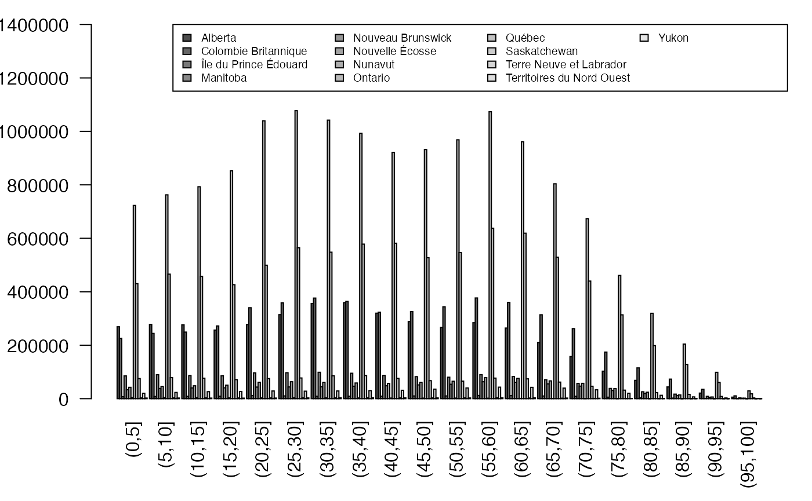
Bonus Europe Siège-Voix
data(Sieges_Voix)
str(Sieges_Voix)
#> 'data.frame': 27 obs. of 4 variables:
#> $ Etats.Membres : chr "Allemagne" "Autriche" "Belgique" "Bulgarie" ...
#> $ Date.entrée : int 1957 1995 1957 2007 2004 1973 1986 2004 1995 1957 ...
#> $ Sièges.au.parlement: int 99 18 24 0 6 14 54 6 14 78 ...
#> $ Voix.au.conseil : int 29 10 12 0 4 7 27 4 7 29 ...
summary(Sieges_Voix)
#> Etats.Membres Date.entrée Sièges.au.parlement Voix.au.conseil
#> Length:27 Min. :1957 Min. : 0.00 Min. : 0.00
#> Class :character 1st Qu.:1973 1st Qu.: 8.00 1st Qu.: 4.00
#> Mode :character Median :1995 Median :18.00 Median :10.00
#> Mean :1987 Mean :27.11 Mean :11.89
#> 3rd Qu.:2004 3rd Qu.:25.50 3rd Qu.:12.50
#> Max. :2007 Max. :99.00 Max. :29.00
NameX <- Sieges_Voix$Etats.Membres
NombreSieges <- Sieges_Voix$Sièges.au.parlement
NombreVoix <- Sieges_Voix$Voix.au.conseil
NameXX <- names(table(Sieges_Voix$Date.entrée))
NombreAnnees <- as.vector(table(Sieges_Voix$Date.entrée))
names(NombreSieges) <- NameX
NombreSieges
#> Allemagne Autriche Belgique Bulgarie
#> 99 18 24 0
#> Chypre Danemark Espagne Estonie
#> 6 14 54 6
#> Finlande France Grèce Hongrie
#> 14 78 24 24
#> Irlande Italie Lettonie Lituanie
#> 13 78 9 13
#> Luxembourg Malte Pays-Bas Pologne
#> 6 5 27 54
#> Portugal République Tchèque Roumanie Royaume-Uni
#> 24 24 0 78
#> Slovaquie Slovénie Suède
#> 14 7 19
Année <- Sieges_Voix$Date.entrée
Pays <- NameX
Europ <- rbind(NombreSieges,NombreVoix)
colnames(Europ) <- Pays
margin.table(Europ)
#> [1] 1053
margin.table(Europ,1)
#> NombreSieges NombreVoix
#> 732 321
margin.table(Europ,2)
#> Allemagne Autriche Belgique Bulgarie
#> 128 28 36 0
#> Chypre Danemark Espagne Estonie
#> 10 21 81 10
#> Finlande France Grèce Hongrie
#> 21 107 36 36
#> Irlande Italie Lettonie Lituanie
#> 20 107 13 20
#> Luxembourg Malte Pays-Bas Pologne
#> 10 8 40 81
#> Portugal République Tchèque Roumanie Royaume-Uni
#> 36 36 0 107
#> Slovaquie Slovénie Suède
#> 21 11 29
margX <- margin.table(Europ,1)
par(mar = c(3, 3, 1, 1) + 0.1, mgp = c(2, 1, 0))
mp <- barplot(margX, beside=FALSE, args.legend=list(x="topright"),col=c("black","cyan","black","cyan"),density=25) # default
margY <- margin.table(Europ,2)
par(mar = c(9.1, 3, 1, 1) + 0.1, mgp = c(2, 1, 0))
mp <- barplot(margY, beside=FALSE, args.legend=list(x="topright"),col=c("black","cyan","black","cyan"),density=25,las=3) # default
margX <- margin.table(Europ,1)
par(mar = c(3, 3, 1, 1) + 0.1, mgp = c(2, 1, 0))
mp <- barplot(margX, beside=FALSE, args.legend=list(x="topright"),col=c("black","cyan","black","cyan"),density=25)
margY <- margin.table(Europ,2)
par(mar = c(9.1, 3, 1, 1) + 0.1, mgp = c(2, 1, 0))
mp <- barplot(margY, beside=FALSE, args.legend=list(x="topright"),col=c("black","cyan","black","cyan"),density=25,las=3) # default
freqcondX <- prop.table(Europ,1) #Y|X
par(mar = c(3, 3, 1, 1) + 0.1, mgp = c(2, 1, 0))
mp <- barplot(t(freqcondX), beside=TRUE, legend = colnames(Europ), ylim = c(0, .35), args.legend=list(x="top", ncol=3)) # default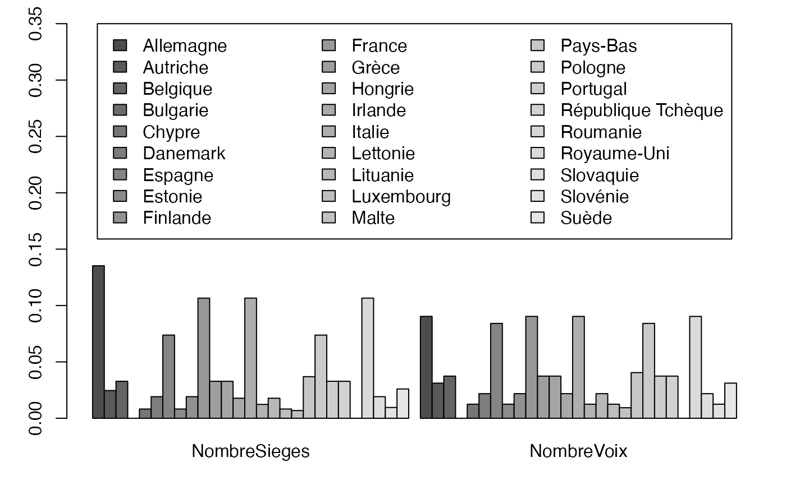
freqcondY <- prop.table(Europ,2) #Y|X
par(mar = c(9.1, 3, 1, 1) + 0.1, mgp = c(2, 1, 0))
mp <- barplot(freqcondY, beside=TRUE, legend = rownames(Europ), ylim = c(0, .95), args.legend=list(x="top", ncol=2),las=3) # default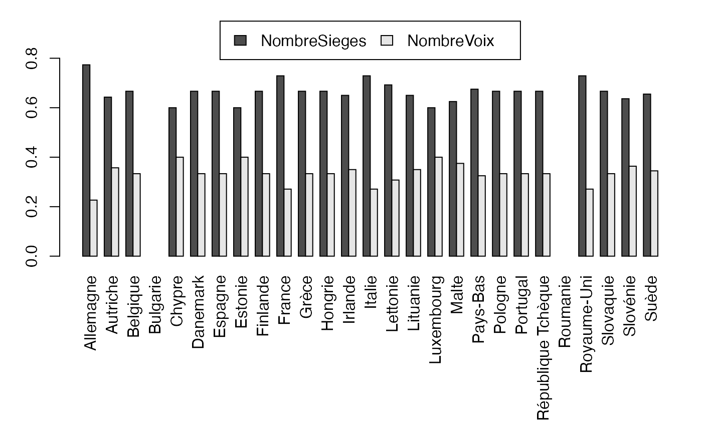
freqcondX <- prop.table(Europ,1) #Y|X
par(mar = c(3, 3, 1, 1) + 0.1, mgp = c(2, 1, 0))
mp <- barplot(t(freqcondX), beside=FALSE, legend = colnames(Europ), ylim = c(0, 1.6), args.legend=list(x="top", ncol=3),yaxt="n") # default
axis(2, at=0:5*.2)
freqcondY <- prop.table(Europ,2) #Y|X
par(mar = c(9.1, 3, 1, 1) + 0.1, mgp = c(2, 1, 0))
mp <- barplot(freqcondY, beside=FALSE, legend = rownames(Europ), ylim = c(0, 1.3), args.legend=list(x="top", ncol=4),yaxt="n",las=3) # default
axis(2, at=0:5*.2)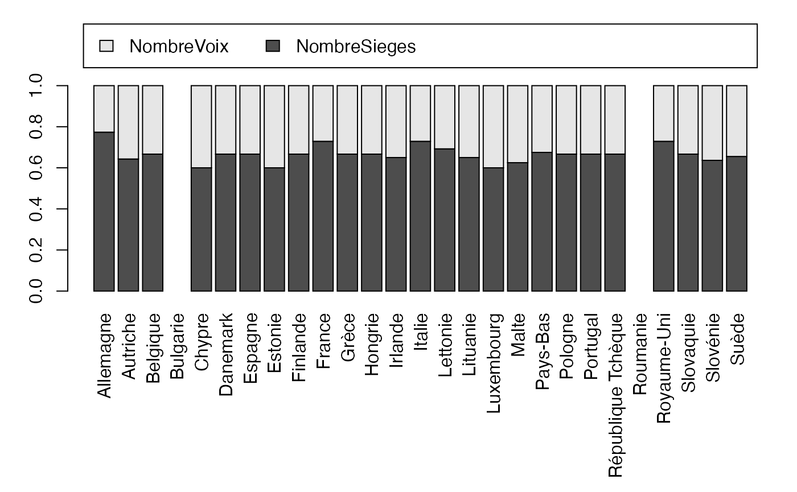
Muldimensionnel
ggpairs
if(!("GGally" %in% installed.packages())){install.packages("GGally")}
library(GGally)
#> Le chargement a nécessité le package : ggplot2
#> Registered S3 method overwritten by 'GGally':
#> method from
#> +.gg ggplot2
ggpairs(iris, progress = FALSE)
#> `stat_bin()` using `bins = 30`. Pick better value with `binwidth`.
#> `stat_bin()` using `bins = 30`. Pick better value with `binwidth`.
#> `stat_bin()` using `bins = 30`. Pick better value with `binwidth`.
#> `stat_bin()` using `bins = 30`. Pick better value with `binwidth`.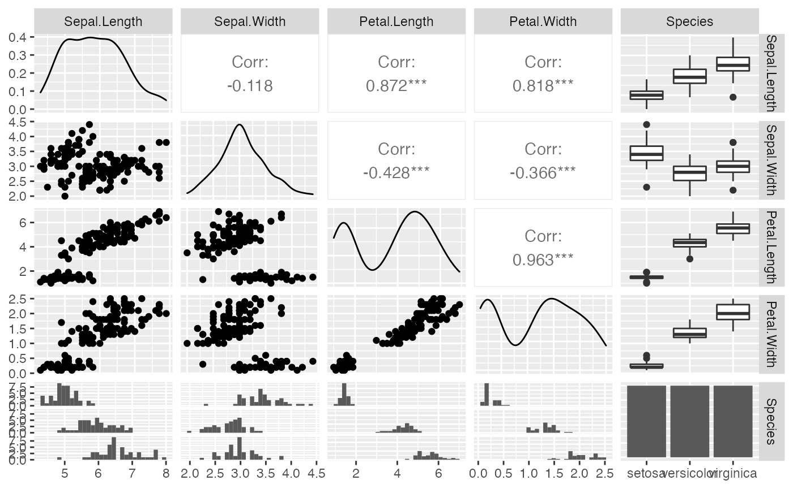
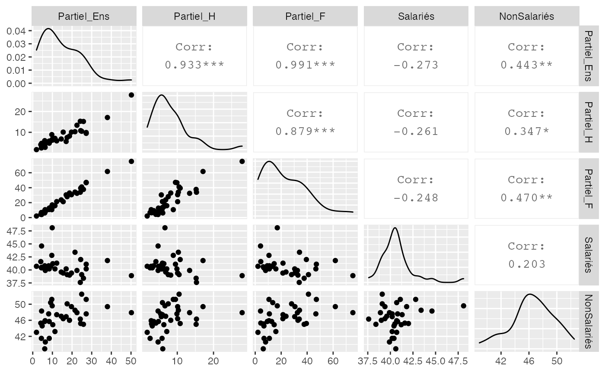
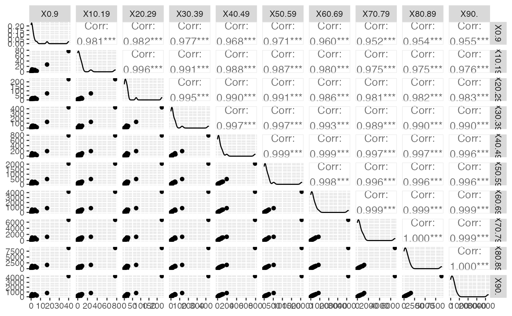
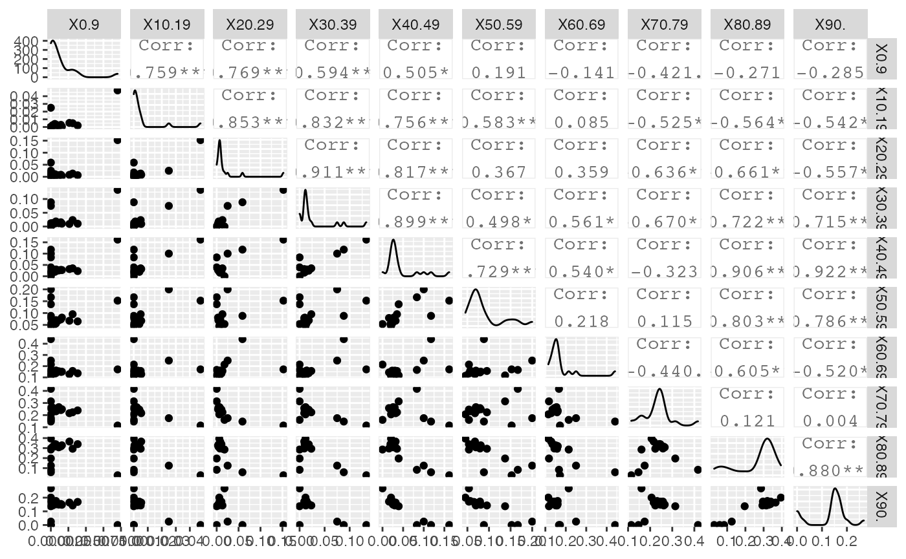
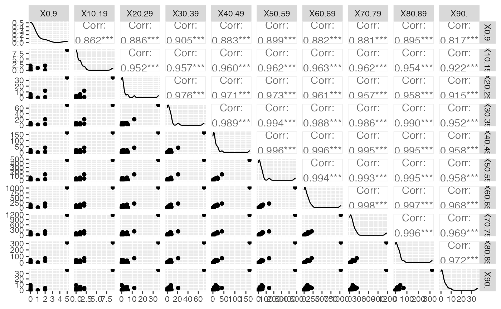
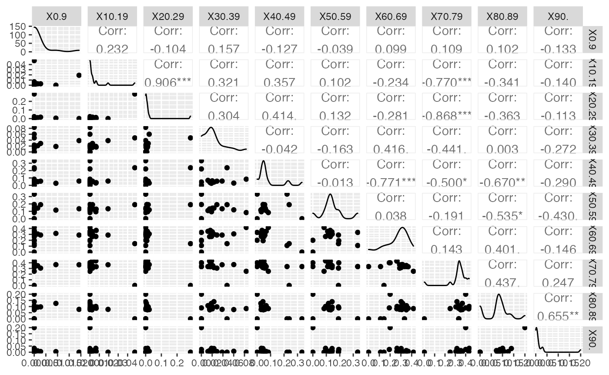
Radar Plots
if(!("ggplot2" %in% installed.packages())){install.packages("ggplot2")}
library(ggplot2)
if(!("ggiraphExtra" %in% installed.packages())){install.packages("ggiraphExtra")}
library(ggiraphExtra)
ggiraphExtra::ggRose(rose,ggplot2::aes(x=Month,fill=group,y=value),stat="identity",interactive=TRUE)
if(!("moonBook" %in% installed.packages())){install.packages("moonBook")}
library(moonBook)
#>
#> Attachement du package : 'moonBook'
#> The following objects are masked from 'package:ggiraphExtra':
#>
#> addLabelDf, getMapping
#> The following object is masked from 'package:lattice':
#>
#> densityplot
ggiraphExtra::ggRose(acs,ggplot2::aes(x=Dx,fill=smoking),interactive=TRUE)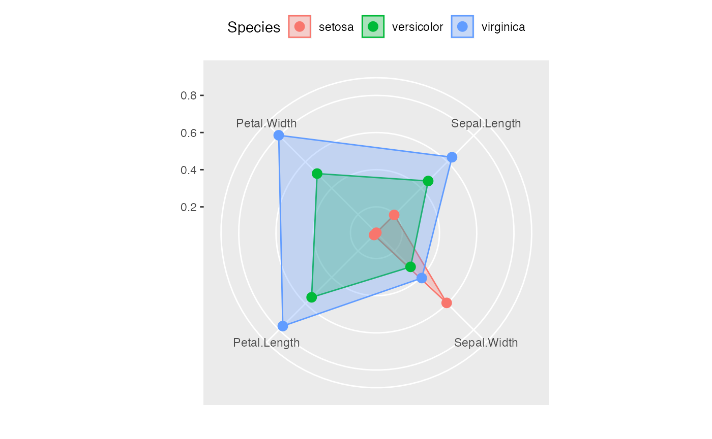
if(!("ggplot2" %in% installed.packages())){install.packages("ggplot2")}
library(ggplot2)
if(!("ggradar" %in% installed.packages())){
devtools::install_github("ricardo-bion/ggradar", dependencies=TRUE)
}
library(ggradar)
#>
#> Attachement du package : 'ggradar'
#> The following object is masked from 'package:sageR':
#>
#> ggradar
if(!("dplyr" %in% installed.packages())){install.packages("dplyr")}
suppressPackageStartupMessages(library(dplyr))
if(!("scales" %in% installed.packages())){install.packages("scales")}
library(scales)
#>
#> Attachement du package : 'scales'
#> The following object is masked from 'package:moonBook':
#>
#> comma
ggradar(data.frame(levels(iris[,5]),t(simplify2array(lapply(split(iris[,-5],iris[,5]),colMeans))/apply(simplify2array(lapply(split(iris[,-5],iris[,5]),colMeans)),1,max))),axis.labels = c("Sepal Length","Sepal\nWidth","Petal Length","Petal\nWidth"))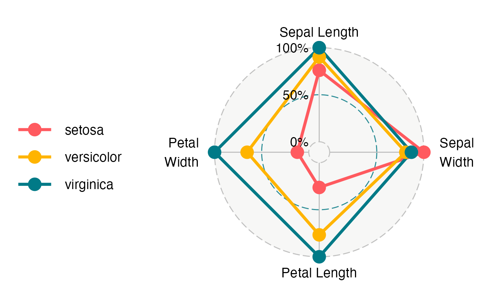
data(Europe)
Europe_rad <- Europe[,-1]
rownames(Europe_rad) <- Europe[,1]
Europe_radar <- Europe_rad %>%
as_tibble(rownames = "group") %>%
mutate_at(vars(-group), rescale)
Europe_radar
#> # A tibble: 35 x 6
#> group Partiel_Ens Partiel_H Partiel_F Salariés NonSalariés
#> <chr> <dbl> <dbl> <dbl> <dbl> <dbl>
#> 1 Allemagne 0.524 0.313 0.610 0.248 0.640
#> 2 Autriche 0.524 0.298 0.616 0.333 0.904
#> 3 Belgique 0.476 0.336 0.532 0.143 1
#> 4 Bulgarie 0 0 0 0.295 0.301
#> 5 Chypre 0.172 0.176 0.171 0.343 0.441
#> 6 Croatie 0.0600 0.0534 0.0629 0.267 0.419
#> 7 Danemark 0.462 0.519 0.435 0 0.544
#> 8 Espagne 0.261 0.195 0.295 0.190 0.596
#> 9 Estonie 0.195 0.206 0.189 0.248 0.316
#> 10 Finlande 0.282 0.321 0.263 0.171 0.551
#> # … with 25 more rows
ggradar(Europe_radar,axis.labels = c("Partiel Ens.", "Partiel\nHommes", "Partiel\nFemmes", "Salariés","Non\nSalariés"), legend.text.size=10)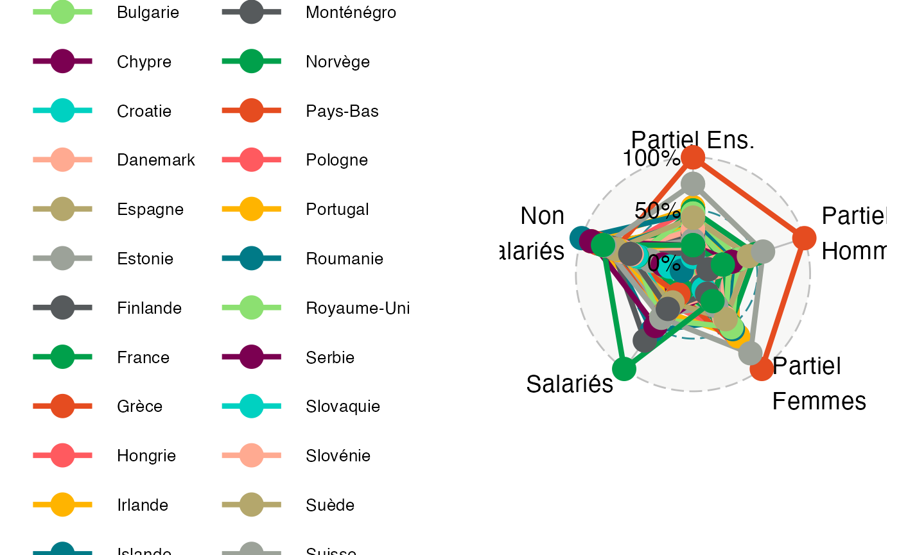
data(HospitFull)
Hospit=cbind(Région=(HospitFull$Région)[-nrow(HospitFull)],HospitFull[-nrow(ReaFull),-c(1,2)])
summary(Hospit)
#> Région X0.9 X10.19 X20.29
#> Length:18 Min. : 0.000 Min. : 0.000 Min. : 0.00
#> Class :character 1st Qu.: 0.000 1st Qu.: 0.000 1st Qu.: 3.00
#> Mode :character Median : 1.000 Median : 2.500 Median : 9.00
#> Mean : 2.222 Mean : 4.278 Mean :12.72
#> 3rd Qu.: 2.000 3rd Qu.: 6.500 3rd Qu.:15.75
#> Max. :17.000 Max. :27.000 Max. :72.00
#> X30.39 X40.49 X50.59 X60.69
#> Min. : 0.00 Min. : 0.00 Min. : 2.0 Min. : 2.00
#> 1st Qu.: 4.00 1st Qu.: 7.25 1st Qu.: 10.0 1st Qu.: 15.75
#> Median : 15.00 Median : 28.00 Median : 81.0 Median :184.50
#> Mean : 23.89 Mean : 43.83 Mean :114.3 Mean :232.28
#> 3rd Qu.: 34.25 3rd Qu.: 64.75 3rd Qu.:179.5 3rd Qu.:359.75
#> Max. :128.00 Max. :192.00 Max. :521.0 Max. :861.00
#> X70.79 X80.89 X90.
#> Min. : 5.0 Min. : 1.0 Min. : 0.0
#> 1st Qu.: 13.0 1st Qu.: 11.5 1st Qu.: 9.0
#> Median : 296.0 Median : 418.0 Median :221.0
#> Mean : 376.1 Mean : 494.3 Mean :239.3
#> 3rd Qu.: 599.8 3rd Qu.: 798.0 3rd Qu.:382.5
#> Max. :1222.0 Max. :1607.0 Max. :783.0
Hospit_rad <- Hospit[,-1]
rownames(Hospit_rad) <- Hospit[,1]
Hospit_radar <- Hospit_rad %>%
as_tibble(rownames = "group") %>%
mutate_at(vars(-group), rescale)
Hospit_radar
#> # A tibble: 18 x 11
#> group X0.9 X10.19 X20.29 X30.39 X40.49 X50.59 X60.69 X70.79 X80.89
#> <chr> <dbl> <dbl> <dbl> <dbl> <dbl> <dbl> <dbl> <dbl> <dbl>
#> 1 Ile-… 1 1 1 1 1 1 1 1 1.00e+0
#> 2 Auve… 0.0588 0.333 0.208 0.367 0.583 0.503 0.662 0.809 7.39e-1
#> 3 Prov… 0.235 0.259 0.319 0.328 0.474 0.470 0.633 0.767 6.77e-1
#> 4 Gran… 0.118 0.111 0.181 0.398 0.359 0.366 0.445 0.554 5.84e-1
#> 5 Haut… 0.118 0.296 0.278 0.305 0.422 0.358 0.501 0.523 5.32e-1
#> 6 Occi… 0.176 0.0370 0.0833 0.156 0.271 0.293 0.332 0.385 3.88e-1
#> 7 Bour… 0.0588 0.259 0.264 0.148 0.177 0.177 0.274 0.351 3.70e-1
#> 8 Nouv… 0.353 0.111 0.139 0.125 0.188 0.193 0.247 0.304 3.31e-1
#> 9 Norm… 0.0588 0.0741 0.153 0.148 0.167 0.145 0.251 0.255 2.71e-1
#> 10 Cent… 0 0 0.111 0.0781 0.0885 0.160 0.178 0.224 1.97e-1
#> 11 Pays… 0 0 0.0833 0.0938 0.109 0.0848 0.133 0.168 2.48e-1
#> 12 Bret… 0.118 0.148 0.0833 0.0547 0.125 0.0944 0.111 0.130 1.71e-1
#> 13 Mayo… 0.0588 0.185 0.222 0.109 0.0885 0.0270 0.0186 0.00575 1.25e-3
#> 14 Corse 0 0 0.0139 0 0 0.00193 0.0116 0.00329 9.34e-3
#> 15 Guad… 0 0 0 0 0.0104 0.00963 0.00466 0.00904 5.60e-3
#> 16 La R… 0 0.0370 0.0139 0.0234 0.0208 0.0116 0.00931 0.00164 2.49e-3
#> 17 Guya… 0 0 0.0278 0.0234 0.0208 0.00193 0.0151 0 6.23e-4
#> 18 Mart… 0 0 0 0 0.00521 0 0 0 0.
#> # … with 1 more variable: X90. <dbl>
ggradar(Hospit_radar, legend.text.size=12)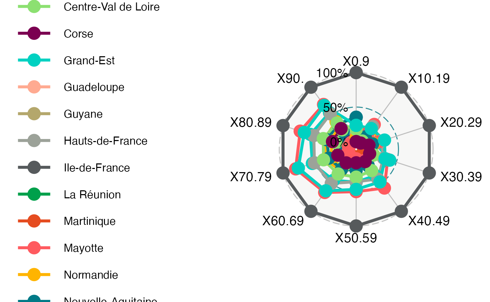
data(ReaFull)
Rea=cbind(Région=(ReaFull$Région)[-nrow(ReaFull)],ReaFull[-nrow(ReaFull),-c(1,2)])
summary(Rea)
#> Région X0.9 X10.19 X20.29
#> Length:18 Min. :0.0000 Min. :0.0 Min. : 0.000
#> Class :character 1st Qu.:0.0000 1st Qu.:0.0 1st Qu.: 0.000
#> Mode :character Median :0.0000 Median :0.0 Median : 1.000
#> Mean :0.2778 Mean :0.5 Mean : 1.944
#> 3rd Qu.:0.0000 3rd Qu.:1.0 3rd Qu.: 2.000
#> Max. :2.0000 Max. :2.0 Max. :12.000
#> X30.39 X40.49 X50.59 X60.69
#> Min. : 0.000 Min. : 0.000 Min. : 0.00 Min. : 0.00
#> 1st Qu.: 0.250 1st Qu.: 2.250 1st Qu.: 3.25 1st Qu.: 3.50
#> Median : 2.500 Median : 5.500 Median : 15.50 Median : 37.50
#> Mean : 3.944 Mean : 9.278 Mean : 26.72 Mean : 57.06
#> 3rd Qu.: 5.750 3rd Qu.:12.500 3rd Qu.: 38.25 3rd Qu.:100.00
#> Max. :21.000 Max. :41.000 Max. :139.00 Max. :211.00
#> X70.79 X80.89 X90.
#> Min. : 0.00 Min. : 0.00 Min. :0.00
#> 1st Qu.: 3.00 1st Qu.: 1.00 1st Qu.:0.00
#> Median : 51.50 Median :11.00 Median :1.00
#> Mean : 65.00 Mean :17.67 Mean :2.00
#> 3rd Qu.: 98.75 3rd Qu.:30.75 3rd Qu.:2.75
#> Max. :223.00 Max. :71.00 Max. :9.00
Rea_rad <- Rea[,-1]
rownames(Rea_rad) <- Rea[,1]
Rea_radar <- Rea_rad %>%
as_tibble(rownames = "group") %>%
mutate_at(vars(-group), rescale)
Rea_radar
#> # A tibble: 18 x 11
#> group X0.9 X10.19 X20.29 X30.39 X40.49 X50.59 X60.69 X70.79 X80.89 X90.
#> <chr> <dbl> <dbl> <dbl> <dbl> <dbl> <dbl> <dbl> <dbl> <dbl> <dbl>
#> 1 Ile-d… 1 1 1 1 1 1 1 1 1 0.444
#> 2 Prove… 0 0.5 0.417 0.333 0.512 0.432 0.749 0.713 0.465 0.667
#> 3 Auver… 0 0.5 0.0833 0.286 0.488 0.367 0.488 0.758 0.451 0.222
#> 4 Grand… 0 0 0.167 0.190 0.537 0.259 0.545 0.489 0.493 0.222
#> 5 Hauts… 0 1 0.0833 0.238 0.268 0.281 0.526 0.448 0.366 0.222
#> 6 Occit… 0 0 0 0.333 0.317 0.309 0.431 0.426 0.592 1
#> 7 Nouve… 1 0 0.0833 0.190 0.146 0.180 0.322 0.354 0.380 0.111
#> 8 Bourg… 0 0.5 0.167 0.143 0.122 0.108 0.199 0.309 0.225 0.556
#> 9 Centr… 0 0 0.0833 0 0.146 0.187 0.123 0.242 0.169 0.333
#> 10 Norma… 0 0 0.25 0.381 0.0976 0.115 0.194 0.220 0.141 0.111
#> 11 Pays … 0 0 0.0833 0.0952 0.146 0.101 0.161 0.152 0.113 0
#> 12 Breta… 0.5 0.5 0 0.0952 0.0732 0.0504 0.0711 0.0852 0.0563 0
#> 13 Mayot… 0 0.5 0.5 0.0476 0.122 0.0288 0.0142 0 0 0
#> 14 Guyane 0 0 0 0.0476 0.0244 0.00719 0.0237 0.0135 0.0141 0
#> 15 La Ré… 0 0 0 0 0.0488 0.0216 0.00474 0.0135 0 0
#> 16 Guade… 0 0 0 0 0 0.0144 0.00948 0.00897 0 0
#> 17 Corse 0 0 0 0 0 0 0.00474 0.00897 0.0141 0.111
#> 18 Marti… 0 0 0 0 0.0244 0 0 0.00448 0 0
ggradar(Rea_radar, legend.text.size=12)Chernov Faces
if(!("DescTools" %in% installed.packages())){install.packages("DescTools")}
library(DescTools)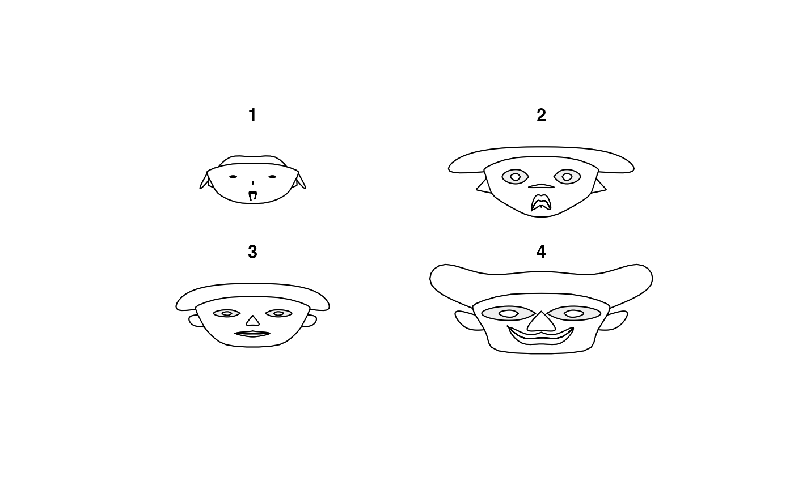
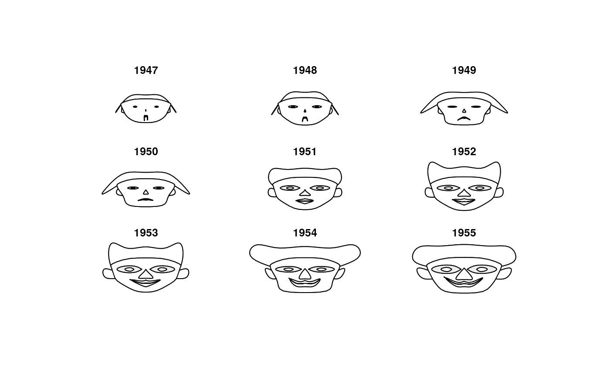
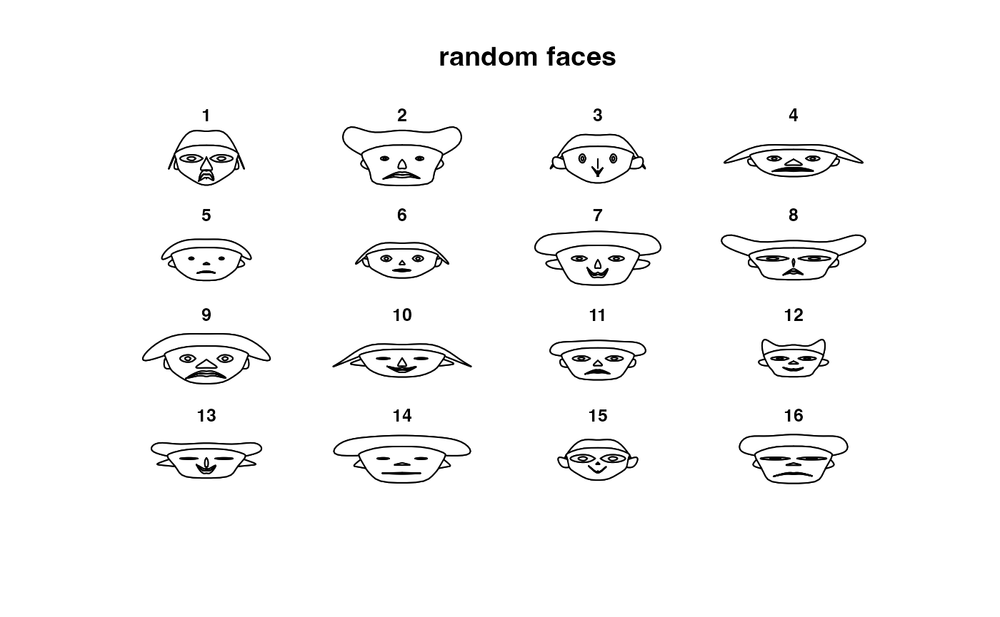
means <- lapply(iris[,-5], tapply, iris$Species, mean)
m <- t(do.call(rbind, means))
m <- cbind(m, matrix(rep(1, 11*3), nrow=3))
# define the colors, first for all faces the same
col <- replicate(3, c("orchid1", "olivedrab", "goldenrod4",
"peachpuff", "darksalmon", "peachpuff3"))
rownames(col) <- c("nose","eyes","hair","face","lips","ears")
# change haircolor individually for each face
col[3, ] <- c("lightgoldenrod", "coral3", "sienna4")
z <- PlotFaces(m, nr=1, nc=3, col=col)
# print the used coding
print(z$info, right=FALSE)
#> modified.item variable
#> 1 height of face Sepal.Length
#> 2 width of face Sepal.Width
#> 3 structure of face Petal.Length
#> 4 height of mouth Petal.Width
#> 5 width of mouth
#> 6 smiling
#> 7 height of eyes
#> 8 width of eyes
#> 9 height of hair
#> 10 width of hair
#> 11 style of hair
#> 12 height of nose
#> 13 width of nose
#> 14 width of ear
#> 15 height of ear
data(Europe)
means <- lapply(Europe[,-1], tapply, Europe$Etats.membres, mean)
m1 <- t(do.call(rbind, means))
# Complétion car au plus 15 variables
m <- cbind(m1, matrix(rep(1, (15-ncol(m1))*nrow(m1)), nrow=nrow(m1)))
# define the colors, first for all faces the same
col <- replicate(nrow(m1), c("orchid1", "olivedrab", "goldenrod4", "peachpuff", "darksalmon", "peachpuff3"))
rownames(col) <- c("nose","eyes","hair","face","lips","ears")
# change haircolor individually for each face
# col[3, ] <- c("lightgoldenrod", "coral3", "sienna4")
set.seed(4669)
col[3, ] <- sample(colors(),nrow(m1))
z <- PlotFaces(m, nr=6, nc=6, col=col)
# print the used coding
print(z$info, right=FALSE)
#> modified.item variable
#> 1 height of face Partiel_Ens
#> 2 width of face Partiel_H
#> 3 structure of face Partiel_F
#> 4 height of mouth Salariés
#> 5 width of mouth NonSalariés
#> 6 smiling
#> 7 height of eyes
#> 8 width of eyes
#> 9 height of hair
#> 10 width of hair
#> 11 style of hair
#> 12 height of nose
#> 13 width of nose
#> 14 width of ear
#> 15 height of ear
data(ReaFull)
Rea=cbind(Région=(ReaFull$Région)[-nrow(ReaFull)],ReaFull[-nrow(ReaFull),-c(1,2)])
summary(Rea)
#> Région X0.9 X10.19 X20.29
#> Length:18 Min. :0.0000 Min. :0.0 Min. : 0.000
#> Class :character 1st Qu.:0.0000 1st Qu.:0.0 1st Qu.: 0.000
#> Mode :character Median :0.0000 Median :0.0 Median : 1.000
#> Mean :0.2778 Mean :0.5 Mean : 1.944
#> 3rd Qu.:0.0000 3rd Qu.:1.0 3rd Qu.: 2.000
#> Max. :2.0000 Max. :2.0 Max. :12.000
#> X30.39 X40.49 X50.59 X60.69
#> Min. : 0.000 Min. : 0.000 Min. : 0.00 Min. : 0.00
#> 1st Qu.: 0.250 1st Qu.: 2.250 1st Qu.: 3.25 1st Qu.: 3.50
#> Median : 2.500 Median : 5.500 Median : 15.50 Median : 37.50
#> Mean : 3.944 Mean : 9.278 Mean : 26.72 Mean : 57.06
#> 3rd Qu.: 5.750 3rd Qu.:12.500 3rd Qu.: 38.25 3rd Qu.:100.00
#> Max. :21.000 Max. :41.000 Max. :139.00 Max. :211.00
#> X70.79 X80.89 X90.
#> Min. : 0.00 Min. : 0.00 Min. :0.00
#> 1st Qu.: 3.00 1st Qu.: 1.00 1st Qu.:0.00
#> Median : 51.50 Median :11.00 Median :1.00
#> Mean : 65.00 Mean :17.67 Mean :2.00
#> 3rd Qu.: 98.75 3rd Qu.:30.75 3rd Qu.:2.75
#> Max. :223.00 Max. :71.00 Max. :9.00
means <- lapply(Rea[,-1], tapply, Rea$Région, mean)
m1 <- t(do.call(rbind, means))
# Complétion car au plus 15 variables
m <- cbind(m1, matrix(rep(1, (15-ncol(m1))*nrow(m1)), nrow=nrow(m1)))
namesXReg <- Rea$Région
namesXReg[3] <- "Auv.-Rhône-Alpes"
namesXReg[8] <- "Bourg.-Fr.-Comté"
namesXReg[2] <- "Prov.-Alpes-C. d’Azur"
# define the colors, first for all faces the same
col <- replicate(nrow(m1), c("orchid1", "olivedrab", "goldenrod4", "peachpuff", "darksalmon", "peachpuff3"))
rownames(col) <- c("nose","eyes","hair","face","lips","ears")
# change haircolor individually for each face
# col[3, ] <- c("lightgoldenrod", "coral3", "sienna4")
set.seed(4669)
col[3, ] <- sample(colors(),nrow(m1))
z <- PlotFaces(m, nr=5, nc=4, col=col,labels = namesXReg)
# print the used coding
print(z$info, right=FALSE)
#> modified.item variable
#> 1 height of face X0.9
#> 2 width of face X10.19
#> 3 structure of face X20.29
#> 4 height of mouth X30.39
#> 5 width of mouth X40.49
#> 6 smiling X50.59
#> 7 height of eyes X60.69
#> 8 width of eyes X70.79
#> 9 height of hair X80.89
#> 10 width of hair X90.
#> 11 style of hair
#> 12 height of nose
#> 13 width of nose
#> 14 width of ear
#> 15 height of ear
data(ReaFull)
Rea=cbind(Région=(ReaFull$Région)[-nrow(ReaFull)],ReaFull[-nrow(ReaFull),-c(1,2)]/((ReaFull$Tous.âges)[-nrow(ReaFull)]))
summary(Rea)
#> Région X0.9 X10.19 X20.29
#> Length:18 Min. :0.000000 Min. :0.000000 Min. :0.000000
#> Class :character 1st Qu.:0.000000 1st Qu.:0.000000 1st Qu.:0.000000
#> Mode :character Median :0.000000 Median :0.000000 Median :0.003981
#> Mean :0.001737 Mean :0.004848 Mean :0.021250
#> 3rd Qu.:0.000000 3rd Qu.:0.002691 3rd Qu.:0.010840
#> Max. :0.019231 Max. :0.047619 Max. :0.285714
#> X30.39 X40.49 X50.59 X60.69
#> Min. :0.000000 Min. :0.00000 Min. :0.0000 Min. :0.0000
#> 1st Qu.:0.003058 1st Qu.:0.03269 1st Qu.:0.1116 1st Qu.:0.2155
#> Median :0.017580 Median :0.04873 Median :0.1314 Median :0.2957
#> Mean :0.022158 Mean :0.07943 Mean :0.1431 Mean :0.2689
#> 3rd Qu.:0.027389 3rd Qu.:0.06561 3rd Qu.:0.1785 3rd Qu.:0.3409
#> Max. :0.083333 Max. :0.33333 Max. :0.3333 Max. :0.4167
#> X70.79 X80.89 X90.
#> Min. :0.0000 Min. :0.00000 Min. :0.000000
#> 1st Qu.:0.3317 1st Qu.:0.07368 1st Qu.:0.000000
#> Median :0.3384 Median :0.08238 Median :0.005284
#> Mean :0.3332 Mean :0.07866 Mean :0.018464
#> 3rd Qu.:0.3682 3rd Qu.:0.09979 3rd Qu.:0.011858
#> Max. :0.4340 Max. :0.20000 Max. :0.200000
means <- lapply(Rea[,-1], tapply, Rea$Région, mean)
m1 <- t(do.call(rbind, means))
# Complétion car au plus 15 variables
m <- cbind(m1, matrix(rep(1, (15-ncol(m1))*nrow(m1)), nrow=nrow(m1)))
namesXReg <- Rea$Région
namesXReg[3] <- "Auv.-Rhône-Alpes"
namesXReg[8] <- "Bourg.-Fr.-Comté"
namesXReg[2] <- "Prov.-Alpes-C. d’Azur"
# define the colors, first for all faces the same
col <- replicate(nrow(m1), c("orchid1", "olivedrab", "goldenrod4", "peachpuff", "darksalmon", "peachpuff3"))
rownames(col) <- c("nose","eyes","hair","face","lips","ears")
# change haircolor individually for each face
# col[3, ] <- c("lightgoldenrod", "coral3", "sienna4")
set.seed(4669)
col[3, ] <- sample(colors(),nrow(m1))
z <- PlotFaces(m, nr=5, nc=4, col=col,labels = namesXReg)
# print the used coding
print(z$info, right=FALSE)
#> modified.item variable
#> 1 height of face X0.9
#> 2 width of face X10.19
#> 3 structure of face X20.29
#> 4 height of mouth X30.39
#> 5 width of mouth X40.49
#> 6 smiling X50.59
#> 7 height of eyes X60.69
#> 8 width of eyes X70.79
#> 9 height of hair X80.89
#> 10 width of hair X90.
#> 11 style of hair
#> 12 height of nose
#> 13 width of nose
#> 14 width of ear
#> 15 height of ear
data(HospitFull)
Hospit=cbind(Région=(HospitFull$Région)[-nrow(HospitFull)],HospitFull[-nrow(HospitFull),-c(1,2)])
summary(Hospit)
#> Région X0.9 X10.19 X20.29
#> Length:18 Min. : 0.000 Min. : 0.000 Min. : 0.00
#> Class :character 1st Qu.: 0.000 1st Qu.: 0.000 1st Qu.: 3.00
#> Mode :character Median : 1.000 Median : 2.500 Median : 9.00
#> Mean : 2.222 Mean : 4.278 Mean :12.72
#> 3rd Qu.: 2.000 3rd Qu.: 6.500 3rd Qu.:15.75
#> Max. :17.000 Max. :27.000 Max. :72.00
#> X30.39 X40.49 X50.59 X60.69
#> Min. : 0.00 Min. : 0.00 Min. : 2.0 Min. : 2.00
#> 1st Qu.: 4.00 1st Qu.: 7.25 1st Qu.: 10.0 1st Qu.: 15.75
#> Median : 15.00 Median : 28.00 Median : 81.0 Median :184.50
#> Mean : 23.89 Mean : 43.83 Mean :114.3 Mean :232.28
#> 3rd Qu.: 34.25 3rd Qu.: 64.75 3rd Qu.:179.5 3rd Qu.:359.75
#> Max. :128.00 Max. :192.00 Max. :521.0 Max. :861.00
#> X70.79 X80.89 X90.
#> Min. : 5.0 Min. : 1.0 Min. : 0.0
#> 1st Qu.: 13.0 1st Qu.: 11.5 1st Qu.: 9.0
#> Median : 296.0 Median : 418.0 Median :221.0
#> Mean : 376.1 Mean : 494.3 Mean :239.3
#> 3rd Qu.: 599.8 3rd Qu.: 798.0 3rd Qu.:382.5
#> Max. :1222.0 Max. :1607.0 Max. :783.0
means <- lapply(Hospit[,-1], tapply, Hospit$Région, mean)
m1 <- t(do.call(rbind, means))
# Complétion car au plus 15 variables
m <- cbind(m1, matrix(rep(1, (15-ncol(m1))*nrow(m1)), nrow=nrow(m1)))
namesXReg <- Rea$Région
namesXReg[3] <- "Auv.-Rhône-Alpes"
namesXReg[8] <- "Bourg.-Fr.-Comté"
namesXReg[2] <- "Prov.-Alpes-C. d’Azur"
# define the colors, first for all faces the same
col <- replicate(nrow(m1), c("orchid1", "olivedrab", "goldenrod4", "peachpuff", "darksalmon", "peachpuff3"))
rownames(col) <- c("nose","eyes","hair","face","lips","ears")
# change haircolor individually for each face
# col[3, ] <- c("lightgoldenrod", "coral3", "sienna4")
set.seed(4669)
col[3, ] <- sample(colors(),nrow(m1))
z <- PlotFaces(m, nr=5, nc=4, col=col,labels = namesXReg)
# print the used coding
print(z$info, right=FALSE)
#> modified.item variable
#> 1 height of face X0.9
#> 2 width of face X10.19
#> 3 structure of face X20.29
#> 4 height of mouth X30.39
#> 5 width of mouth X40.49
#> 6 smiling X50.59
#> 7 height of eyes X60.69
#> 8 width of eyes X70.79
#> 9 height of hair X80.89
#> 10 width of hair X90.
#> 11 style of hair
#> 12 height of nose
#> 13 width of nose
#> 14 width of ear
#> 15 height of ear
data(HospitFull)
Hospit=cbind(Région=(HospitFull$Région)[-nrow(HospitFull)],HospitFull[-nrow(HospitFull),-c(1,2)]/((HospitFull$Tous.âges)[-nrow(HospitFull)]))
summary(Hospit)
#> Région X0.9 X10.19 X20.29
#> Length:18 Min. :0.000000 Min. :0.000000 Min. :0.000000
#> Class :character 1st Qu.:0.000000 1st Qu.:0.000000 1st Qu.:0.004985
#> Mode :character Median :0.000644 Median :0.001690 Median :0.007432
#> Mean :0.001380 Mean :0.005508 Mean :0.018862
#> 3rd Qu.:0.001465 3rd Qu.:0.003730 3rd Qu.:0.012568
#> Max. :0.009524 Max. :0.047619 Max. :0.152381
#> X30.39 X40.49 X50.59 X60.69
#> Min. :0.000000 Min. :0.00000 Min. :0.04541 Min. :0.1145
#> 1st Qu.:0.009531 1st Qu.:0.02308 1st Qu.:0.06561 1st Qu.:0.1367
#> Median :0.011870 Median :0.02847 Median :0.06969 Median :0.1529
#> Mean :0.025165 Mean :0.04494 Mean :0.08996 Mean :0.1718
#> 3rd Qu.:0.017364 3rd Qu.:0.03818 3rd Qu.:0.09344 3rd Qu.:0.1650
#> Max. :0.133333 Max. :0.16190 Max. :0.20000 Max. :0.4412
#> X70.79 X80.89 X90.
#> Min. :0.1143 Min. :0.02857 Min. :0.0000
#> 1st Qu.:0.2087 1st Qu.:0.21849 1st Qu.:0.1387
#> Median :0.2384 Median :0.31125 Median :0.1506
#> Mean :0.2336 Mean :0.26288 Mean :0.1317
#> 3rd Qu.:0.2555 3rd Qu.:0.33508 3rd Qu.:0.1703
#> Max. :0.4167 Max. :0.39487 Max. :0.2679
means <- lapply(Hospit[,-1], tapply, Hospit$Région, mean)
m1 <- t(do.call(rbind, means))
# Complétion car au plus 15 variables
m <- cbind(m1, matrix(rep(1, (15-ncol(m1))*nrow(m1)), nrow=nrow(m1)))
namesXReg <- Rea$Région
namesXReg[3] <- "Auv.-Rhône-Alpes"
namesXReg[8] <- "Bourg.-Fr.-Comté"
namesXReg[2] <- "Prov.-Alpes-C. d’Azur"
# define the colors, first for all faces the same
col <- replicate(nrow(m1), c("orchid1", "olivedrab", "goldenrod4", "peachpuff", "darksalmon", "peachpuff3"))
rownames(col) <- c("nose","eyes","hair","face","lips","ears")
# change haircolor individually for each face
# col[3, ] <- c("lightgoldenrod", "coral3", "sienna4")
set.seed(4669)
col[3, ] <- sample(colors(),nrow(m1))
z <- PlotFaces(m, nr=5, nc=4, col=col,labels = namesXReg)
# print the used coding
print(z$info, right=FALSE)
#> modified.item variable
#> 1 height of face X0.9
#> 2 width of face X10.19
#> 3 structure of face X20.29
#> 4 height of mouth X30.39
#> 5 width of mouth X40.49
#> 6 smiling X50.59
#> 7 height of eyes X60.69
#> 8 width of eyes X70.79
#> 9 height of hair X80.89
#> 10 width of hair X90.
#> 11 style of hair
#> 12 height of nose
#> 13 width of nose
#> 14 width of ear
#> 15 height of earMesures de liaison
Salariés*Non-salariés (Quanti-Quanti)
data(Europe)
sum((Europe$Salariés-mean(Europe$Salariés))*(Europe$NonSalariés-mean(Europe$NonSalariés)))/nrow(Europe)
#> [1] 1.150155
cov(Europe$Salariés,Europe$NonSalariés)*(nrow(Europe)-1)/nrow(Europe)
#> [1] 1.150155
var(Europe$Salariés)*(nrow(Europe)-1)/nrow(Europe)
#> [1] 3.411478
var(Europe$NonSalariés)*(nrow(Europe)-1)/nrow(Europe)
#> [1] 9.449682
sum((Europe$Salariés-mean(Europe$Salariés))*(Europe$Salariés-mean(Europe$Salariés)))/nrow(Europe)
#> [1] 3.411478
sum((Europe$NonSalariés-mean(Europe$NonSalariés))*(Europe$NonSalariés-mean(Europe$NonSalariés)))/nrow(Europe)
#> [1] 9.449682
sqrt(sum((Europe$Salariés-mean(Europe$Salariés))*(Europe$Salariés-mean(Europe$Salariés)))/nrow(Europe))
#> [1] 1.847019
sqrt(sum((Europe$NonSalariés-mean(Europe$NonSalariés))*(Europe$NonSalariés-mean(Europe$NonSalariés)))/nrow(Europe))
#> [1] 3.074033
cov(Europe$Salariés,Europe$NonSalariés)*(nrow(Europe)-1)/nrow(Europe)/(sqrt(sum((Europe$Salariés-mean(Europe$Salariés))*(Europe$Salariés-mean(Europe$Salariés)))/nrow(Europe))*sqrt(sum((Europe$NonSalariés-mean(Europe$NonSalariés))*(Europe$NonSalariés-mean(Europe$NonSalariés)))/nrow(Europe)))
#> [1] 0.2025707
cor(Europe$Salariés,Europe$NonSalariés)
#> [1] 0.2025707
c(Europe$Partiel_Ens,Europe$Partiel_H,Europe$Partiel_F)
#> [1] 27.2 27.2 24.9 1.9 10.2 4.8 24.2 14.5 11.3 15.5 17.5 9.1 4.4 19.7 21.5
#> [16] 18.7 8.4 6.4 17.0 4.1 12.2 4.5 25.8 50.2 6.1 8.1 6.1 24.4 9.7 4.5
#> [31] 8.4 22.5 38.0 6.3 9.9 9.9 9.5 10.5 1.7 6.3 3.1 15.3 6.8 7.1 10.1
#> [46] 7.5 5.9 2.5 10.1 10.3 8.2 5.8 4.7 5.6 4.1 5.9 4.7 15.2 27.9 3.5
#> [61] 5.4 6.0 10.8 8.9 2.9 4.8 13.4 17.1 2.8 6.6 46.7 47.1 41.0 2.1 14.6
#> [76] 6.7 33.9 23.7 15.9 21.3 28.0 13.5 6.8 30.6 34.1 32.9 10.9 8.0 30.4 4.3
#> [91] 21.4 4.1 37.7 75.2 9.3 10.9 6.2 39.4 10.6 6.5 12.7 32.5 61.7 10.6 17.0
factor(c(rep("Ensemble",length(Europe$Partiel_Ens)),rep("Hommes",length(Europe$Partiel_H)),rep("Femmes",length(Europe$Partiel_F))))
#> [1] Ensemble Ensemble Ensemble Ensemble Ensemble Ensemble Ensemble Ensemble
#> [9] Ensemble Ensemble Ensemble Ensemble Ensemble Ensemble Ensemble Ensemble
#> [17] Ensemble Ensemble Ensemble Ensemble Ensemble Ensemble Ensemble Ensemble
#> [25] Ensemble Ensemble Ensemble Ensemble Ensemble Ensemble Ensemble Ensemble
#> [33] Ensemble Ensemble Ensemble Hommes Hommes Hommes Hommes Hommes
#> [41] Hommes Hommes Hommes Hommes Hommes Hommes Hommes Hommes
#> [49] Hommes Hommes Hommes Hommes Hommes Hommes Hommes Hommes
#> [57] Hommes Hommes Hommes Hommes Hommes Hommes Hommes Hommes
#> [65] Hommes Hommes Hommes Hommes Hommes Hommes Femmes Femmes
#> [73] Femmes Femmes Femmes Femmes Femmes Femmes Femmes Femmes
#> [81] Femmes Femmes Femmes Femmes Femmes Femmes Femmes Femmes
#> [89] Femmes Femmes Femmes Femmes Femmes Femmes Femmes Femmes
#> [97] Femmes Femmes Femmes Femmes Femmes Femmes Femmes Femmes
#> [105] Femmes
#> Levels: Ensemble Femmes Hommes
donnees = data.frame(Taux=c(Europe$Partiel_Ens,Europe$Partiel_H,Europe$Partiel_F),Type=factor(c(rep("Ensemble",length(Europe$Partiel_Ens)),rep("Hommes",length(Europe$Partiel_H)),rep("Femmes",length(Europe$Partiel_F)))))
tapply(donnees$Taux,donnees$Type,mean)
#> Ensemble Femmes Hommes
#> 15.005714 23.094286 8.025714
var(tapply(donnees$Taux,donnees$Type,mean))*(nlevels(donnees$Type)-1)/nlevels(donnees$Type)
#> [1] 37.91191
mean(tapply(donnees$Taux,donnees$Type,var)*(length(Europe$Partiel_Ens)-1)/length(Europe$Partiel_Ens))
#> [1] 144.2113
var(tapply(donnees$Taux,donnees$Type,mean))*(nlevels(donnees$Type)-1)/nlevels(donnees$Type)+mean(tapply(donnees$Taux,donnees$Type,var))*(length(Europe$Partiel_Ens)-1)/length(Europe$Partiel_Ens)
#> [1] 182.1232
var(donnees$Taux)*(nlevels(donnees$Type)*length(Europe$Partiel_Ens)-1)/nlevels(donnees$Type)/length(Europe$Partiel_Ens)
#> [1] 182.1232
var(tapply(donnees$Taux,donnees$Type,mean))*(nlevels(donnees$Type)-1)/nlevels(donnees$Type)/(var(donnees$Taux)*(nlevels(donnees$Type)*length(Europe$Partiel_F)-1)/nlevels(donnees$Type)/length(Europe$Partiel_Ens))
#> [1] 0.2081663Provinces et territoires vs Sexe Canada (Quali-Quali)
data(ProtervsSexe_Canada)Association
ProtervsSexe_Canada.table <- as.table(as.matrix(ProtervsSexe_Canada))
aaa=chisq.test(ProtervsSexe_Canada.table)
aaa$expected
#> Hommes Femmes
#> Terre-Neuve-et-Labrador 259439.28 262663.72
#> Île-du-Prince-Édouard 79319.59 80305.41
#> Nouvelle-Écosse 486651.32 492699.68
#> Nouveau-Brunswick 388324.85 393151.15
#> Québec 4260807.72 4313763.28
#> Ontario 7321509.21 7412504.79
#> Manitoba 685372.41 693890.59
#> Saskatchewan 585700.80 592980.20
#> Alberta 2197283.50 2224592.50
#> Colombie-Britannique 2557960.16 2589751.84
#> Yukon 20896.15 21155.85
#> Territoires du Nord-Ouest 22441.05 22719.95
#> Nunavut 19554.98 19798.02
aaa$statistic
#> X-squared
#> 2152.457
aaa$statistic/(sum(ProtervsSexe_Canada.table))
#> X-squared
#> 5.663581e-05OCDE Secteur (Quali-Quali)
data(Secteur)
rownames(Secteur) <- Secteur$PAYS
Secteur <- as.table(as.matrix(round(Secteur[,-1]*1000)))
Secteur.table <- as.table(as.matrix(Secteur))
bbb=chisq.test(Secteur.table)
bbb$expected
#> AGR CONSTR INDUSCONSTR MFG SERV
#> AUT 189776.809 315922.44 943693.373 577117.965 3311392.41
#> BEL 203404.049 338607.78 1011456.845 618558.880 3549172.45
#> CAN 750955.326 1250119.23 3734236.899 2283681.607 13103327.94
#> CHE 197989.374 329593.94 984531.571 602092.663 3454692.45
#> CHL 310449.251 516806.48 1543755.014 944087.112 5416991.14
#> COL 810284.374 1348884.60 4029259.407 2464103.335 14138553.28
#> CZE 249426.081 415220.89 1240308.237 758513.502 4352205.29
#> DNK 118862.206 197870.53 591059.972 361464.156 2074012.14
#> ESP 807113.679 1343606.33 4013492.652 2454461.138 14083228.20
#> EST 7119.071 11851.15 35400.636 21649.345 124219.80
#> FIN 41045.403 68328.49 204104.361 124820.516 716196.23
#> FRA 1129699.978 1880617.42 5617600.942 3435457.442 19711997.22
#> GBR 1328018.819 2210759.82 6603770.835 4038552.026 23172438.50
#> GRC 155792.242 259348.15 774700.064 473769.698 2718399.84
#> HUN 205766.098 342539.89 1023202.487 625741.956 3590387.57
#> IRL 95718.116 159342.44 475972.547 291082.162 1670173.73
#> ISL 1429.965 2380.47 7110.712 4348.573 24951.28
#> ISR 155249.708 258444.99 772002.233 472119.833 2708933.23
#> ITA 1010023.972 1681392.15 5022494.223 3071518.489 17623785.17
#> JPN 2914535.166 4851841.81 14492959.023 8863204.142 50855368.85
#> KOR 1182576.889 1968641.88 5880539.237 3596257.992 20634640.00
#> LTU 58572.345 97505.69 291259.687 178120.566 1022021.71
#> LUX 11266.256 18755.00 56023.133 34261.082 196583.53
#> LVA 9013.176 15004.28 44819.355 27409.385 157269.80
#> NLD 360634.361 600349.89 1793307.929 1096701.801 6292665.02
#> NOR 110723.448 184321.90 550588.793 336713.908 1931999.95
#> NZL 115284.218 191914.24 573267.900 350583.371 2011580.27
#> POL 746826.023 1243245.16 3713703.328 2271124.252 13031276.24
#> PRT 209835.175 349313.70 1043436.574 638116.160 3661388.39
#> SVK 120358.121 200360.79 598498.632 366013.286 2100114.17
#> SVN 45350.940 75495.95 225514.285 137913.806 791323.02
#> SWE 208774.496 347547.99 1038162.191 634890.598 3642880.73
#> TUR 1194746.433 1988900.59 5941054.099 3633266.003 20846984.88
#> USA 6086962.433 10132997.95 30268324.824 18510667.250 106210665.55
bbb$statistic
#> X-squared
#> 43415630
bbb$statistic/(sum(Secteur.table))
#> X-squared
#> 0.07300288Taux partiel ANOVA (Quali-Quanti)
data(Europe)
donnees = data.frame(Taux=c(Europe$Partiel_Ens,Europe$Partiel_H,Europe$Partiel_F),Type=factor(c(rep("Ensemble",nrow(Europe)),rep("Hommes",nrow(Europe)),rep("Femmes",nrow(Europe)))))
tapply(donnees$Taux,donnees$Type,mean)
#> Ensemble Femmes Hommes
#> 15.005714 23.094286 8.025714
var(tapply(donnees$Taux,donnees$Type,mean))*(nlevels(donnees$Type)-1)/nlevels(donnees$Type)
#> [1] 37.91191
mean(tapply(donnees$Taux,donnees$Type,var)*(nrow(Europe)-1)/nrow(Europe))
#> [1] 144.2113
var(tapply(donnees$Taux,donnees$Type,mean))*(nlevels(donnees$Type)-1)/nlevels(donnees$Type)+mean(tapply(donnees$Taux,donnees$Type,var)*(nrow(Europe)-1)/nrow(Europe))
#> [1] 182.1232
var(donnees$Taux)*(nlevels(donnees$Type)*nrow(Europe)-1)/nlevels(donnees$Type)/nrow(Europe)
#> [1] 182.1232
var(tapply(donnees$Taux,donnees$Type,mean))*(nlevels(donnees$Type)-1)/nlevels(donnees$Type)/(var(donnees$Taux)*(nlevels(donnees$Type)*nrow(Europe)-1)/nlevels(donnees$Type)/nrow(Europe))
#> [1] 0.2081663
summary(lm(Taux~Type,data=donnees))
#>
#> Call:
#> lm(formula = Taux ~ Type, data = donnees)
#>
#> Residuals:
#> Min 1Q Median 3Q Max
#> -20.994 -7.194 -2.026 6.494 52.106
#>
#> Coefficients:
#> Estimate Std. Error t value Pr(>|t|)
#> (Intercept) 15.006 2.059 7.286 6.93e-11 ***
#> TypeFemmes 8.089 2.913 2.777 0.00653 **
#> TypeHommes -6.980 2.913 -2.397 0.01837 *
#> ---
#> Signif. codes: 0 '***' 0.001 '**' 0.01 '*' 0.05 '.' 0.1 ' ' 1
#>
#> Residual standard error: 12.18 on 102 degrees of freedom
#> Multiple R-squared: 0.2082, Adjusted R-squared: 0.1926
#> F-statistic: 13.41 on 2 and 102 DF, p-value: 6.766e-06
par(mar = c(2, 2, 1, 1) + 0.1, mgp = c(2, 1, 0))
pie(table(donnees$Type),labels=levels(donnees$Type),col=c("white","#00FFFF","black","#00FFFF"),border=c("black","#00FFFF","black","#00FFFF"),density=25,cex=1.2)
TauxQuali <- cut(donnees$Taux,c(0,10,20,30,40,50,60,70,80))
split(donnees$Type,TauxQuali)
#> $`(0,10]`
#> [1] Ensemble Ensemble Ensemble Ensemble Ensemble Ensemble Ensemble Ensemble
#> [9] Ensemble Ensemble Ensemble Ensemble Ensemble Ensemble Ensemble Ensemble
#> [17] Hommes Hommes Hommes Hommes Hommes Hommes Hommes Hommes
#> [25] Hommes Hommes Hommes Hommes Hommes Hommes Hommes Hommes
#> [33] Hommes Hommes Hommes Hommes Hommes Hommes Hommes Hommes
#> [41] Hommes Femmes Femmes Femmes Femmes Femmes Femmes Femmes
#> [49] Femmes Femmes
#> Levels: Ensemble Femmes Hommes
#>
#> $`(10,20]`
#> [1] Ensemble Ensemble Ensemble Ensemble Ensemble Ensemble Ensemble Ensemble
#> [9] Ensemble Hommes Hommes Hommes Hommes Hommes Hommes Hommes
#> [17] Hommes Hommes Femmes Femmes Femmes Femmes Femmes Femmes
#> [25] Femmes Femmes Femmes
#> Levels: Ensemble Femmes Hommes
#>
#> $`(20,30]`
#> [1] Ensemble Ensemble Ensemble Ensemble Ensemble Ensemble Ensemble Ensemble
#> [9] Hommes Femmes Femmes Femmes Femmes
#> Levels: Ensemble Femmes Hommes
#>
#> $`(30,40]`
#> [1] Ensemble Femmes Femmes Femmes Femmes Femmes Femmes Femmes
#> [9] Femmes
#> Levels: Ensemble Femmes Hommes
#>
#> $`(40,50]`
#> [1] Femmes Femmes Femmes
#> Levels: Ensemble Femmes Hommes
#>
#> $`(50,60]`
#> [1] Ensemble
#> Levels: Ensemble Femmes Hommes
#>
#> $`(60,70]`
#> [1] Femmes
#> Levels: Ensemble Femmes Hommes
#>
#> $`(70,80]`
#> [1] Femmes
#> Levels: Ensemble Femmes Hommes
sapply(split(donnees$Type,TauxQuali),table)
#> (0,10] (10,20] (20,30] (30,40] (40,50] (50,60] (60,70] (70,80]
#> Ensemble 16 9 8 1 0 1 0 0
#> Femmes 9 9 4 8 3 0 1 1
#> Hommes 25 9 1 0 0 0 0 0
regroup <- sapply(split(donnees$Type,TauxQuali),table)
par(mar = c(3, 3, 1, 1) + 0.1, mgp = c(2, 1, 0))
barplot(regroup,beside=TRUE, legend=levels(donnees$Type), args.legend=list(x="topright", ncol=1))Iris Fisher (Quali-Quanti)
tapply(donnees$Sepal.Length,donnees$Species,mean)
#> setosa versicolor virginica
#> 5.006 5.936 6.588
var(tapply(donnees$Sepal.Length,donnees$Species,mean))*(nlevels(donnees$Species)-1)/nlevels(donnees$Species)
#> [1] 0.4214142
mean(tapply(donnees$Sepal.Length,donnees$Species,var)*(nrow(Europe)-1)/nrow(Europe))
#> [1] 0.2574365
var(tapply(donnees$Sepal.Length,donnees$Species,mean))*(nlevels(donnees$Species)-1)/nlevels(donnees$Species)+mean(tapply(donnees$Sepal.Length,donnees$Species,var)*(nrow(Europe)-1)/nrow(Europe))
#> [1] 0.6788507
var(donnees$Sepal.Length)*(nlevels(donnees$Species)*nrow(Europe)-1)/nlevels(donnees$Species)/nrow(Europe)
#> [1] 0.6791631
var(tapply(donnees$Sepal.Length,donnees$Species,mean))*(nlevels(donnees$Species)-1)/nlevels(donnees$Species)/(var(donnees$Sepal.Length)*(nlevels(donnees$Species)*nrow(Europe)-1)/nlevels(donnees$Species)/nrow(Europe))
#> [1] 0.6204905
summary(lm(Sepal.Length~Species,data=donnees))
#>
#> Call:
#> lm(formula = Sepal.Length ~ Species, data = donnees)
#>
#> Residuals:
#> Min 1Q Median 3Q Max
#> -1.6880 -0.3285 -0.0060 0.3120 1.3120
#>
#> Coefficients:
#> Estimate Std. Error t value Pr(>|t|)
#> (Intercept) 5.0060 0.0728 68.762 < 2e-16 ***
#> Speciesversicolor 0.9300 0.1030 9.033 8.77e-16 ***
#> Speciesvirginica 1.5820 0.1030 15.366 < 2e-16 ***
#> ---
#> Signif. codes: 0 '***' 0.001 '**' 0.01 '*' 0.05 '.' 0.1 ' ' 1
#>
#> Residual standard error: 0.5148 on 147 degrees of freedom
#> Multiple R-squared: 0.6187, Adjusted R-squared: 0.6135
#> F-statistic: 119.3 on 2 and 147 DF, p-value: < 2.2e-16